First Update of the second
2023 SUBMISSION TO UNFCCC
Foreword
With great pleasure, I introduce the First Update of the Second National Determination Contributions (NDC) for the Sultanate of Oman. This document represents the country's ongoing commitment to addressing the climate emergency and supporting the global effort to reduce greenhouse gas emissions and limit the impact of climate change.
I am particularly proud to highlight the landmark decision of the Government of Oman to adopt carbon neutrality by 2050. This ambitious target demonstrates the country's leadership and commitment to contributing significantly towards a sustainable future.
The updated Second Nationally Determined Contribution provides a comprehensive outlook on Oman's aspirations to reach net zero greenhouse gas emissions by 2050 and move towards a sustainable low-carbon economy. Notably, the country is taking proactive steps during this decade to reduce emissions by 21%, compared to their expected emissions based on business-as-usual projections by 2030. This is a commendable and essential step toward addressing the global climate crisis.
In this update, Oman showcases its latest nationwide strategies and programs for climate change. Moreover, it sheds a light on the new baseline data and Business-as-Usual projections towards its Net Zero emissions journey, ensuring the highest levels transparency and accuracy of utilized data.
Furthermore, this update further elaborates on Oman’s past, ongoing, and future efforts in adaptation and mitigation across all of its sectors. These efforts are intertwined with our pillars of economic diversification and active youth involvement. The earnest commitment of Oman for a meaningful participation in global climate action is demonstrated through the comprehensiveness and well-roundedness of its climate programs and initiatives.
Dr. Abdullah bin Ali Al-Omari, Chairman of the Environment Authority
1.1 Introduction 2023
The Sultanate of Oman, situated in a region highly vulnerable to climate change, faces escalating risks. These risks include rising temperatures, prolonged periods of high humidity, sea-level rise and an increased likelihood of extreme weather events such as tropical cyclones, heatwaves, intense rainfall and extended droughts, as underscored in Oman's vulnerability context according to the IPCC AR6 report. Moreover, much of Oman's population, infrastructure, and economic activities are located in coastal zones, making the Sultanate more vulnerable to sea-level rise, saltwater intrusion, and more frequent extreme weather events.
The future increase in temperature in the Arabian Peninsula, as projected by the 6th Assessment Report (AR6), is a cause for concern. The report indicates that if global temperatures continue to rise, the temperature threshold of human survivability could be exceeded in many parts of the world, including the Arabian Peninsula. The AR6 report projects that under the high-emissions scenario of global warming ('SSP5-8.5')1 , average temperatures in Oman could increase by 4 to 5°C by the end of the century compared to the reference period of 1995-2014. This temperature increase will have far-reaching impacts on the environment, including increased water scarcity and decreased crop yields. Moreover, the temperature increase will also significantly impact human health and well-being, particularly for vulnerable populations such as the elderly, children, and people with existing health conditions. The temperature rise will also exacerbate existing problems, such as air pollution, and increase the risk of heat-related illnesses.
The Sultanate of Oman recognizes the urgency of taking decisive action and is committed to achieving the Paris Global Goal of limiting global temperature increase to well below 2°C above pre-industrial levels. The country is also actively pursuing additional efforts to achieve the more ambitious target of 1.5°C above pre-industrial levels, as recommended by the IPCC AR6.
1.2 Geographical and Climate Profile
The Sultanate of Oman is situated in the southeastern part of the Arabian Peninsula, straddling the Tropic of Cancer and spanning latitudes from approximately 16°40´N to 26°20´N and longitudes from about 51°50´E to 59°50´E. It covers a total land area of approximately 309,500 square kilometers and boasts a diverse landscape, featuring mountain ranges, arid deserts, and fertile plains. Oman's extensive coastline, which stretches for approximately 3,165 kilometers, borders the Arabian Gulf, the Sea of Oman, and the Arabian Sea. This coastal terrain varies significantly, from steep 40-meter-high cliffs near Musandam in the far north, to shallow sandy beaches with occasional inlets, lagoons, and mangroves in the Al Batinah governorates along the Sea of Oman. The mountainous regions occupy approximately 15% of Oman's territory, with the Hajar mountains in the north extending in a 700-kilometer arc from Musandam in the north to Ras Al Hadd in the east. Jebel Akhdar, part of the northern Oman Mountains, includes Jabal Shams, the highest peak, which rises to 3,075 meters above sea level. In the southwestern part of Oman, the Dhofar Mountains feature peaks ranging from 1,000 to 2,000 meters above sea level. Oman's climate is arid according to the Köppen-Geiger classification system. This classification results from the interplay between the country's geographical features and the atmospheric circulation patterns in the region spanning 10°–50°N in Eurasia.
Oman's extensive north-to-south stretch and diverse topography, give rise to a range of climatic conditions at local scales. These variations encompass the scorching summer heat of the Rub al Khali desert in the southern Arabian Peninsula to the more temperate climate of the Hajar mountains in the north. This translates into an array of climatic conditions, ranging from hyper-arid (receiving less than 100 mm of rainfall annually) to semi-arid (experiencing 250–500 mm of rainfall annually). These extremes, coupled with varying temperatures, have a profound influence on Oman's vegetation distribution and abundance.
Periodically, Oman is subjected to extreme weather events associated with tropical cyclones originating in the northern Indian Ocean and the Arabian Sea. Over the past few decades, Oman has encountered destructive tropical depressions, tropical cyclonic storms, and severe cyclonic storms that have advanced towards its territory. These meteorological disturbances are usually observed during the pre-monsoon period in May and June, as well as the post-monsoon period in October and November.
1.3 National Circumstances
The landmark decision made in October 2022 to transition to carbon neutrality by 2050, led by His Majesty Sultan Haitham bin Tariq, stands as a monumental milestone for Oman. This commitment signals a critical shift towards cleaner energy production and consumption, safeguarding the country's long-term sustainability while preserving the planet for future generations and shifting to a knowledge-based green economy.
To reach Net-Zero by 2050, the Sultanate of Oman has defined five basic principles :
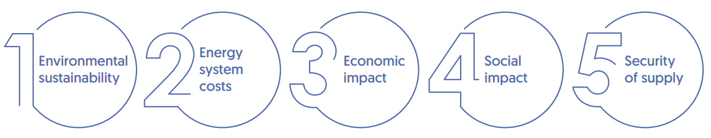
Additionally, Oman has identified the most advanced decarbonization technologies that will facilitate the transition:
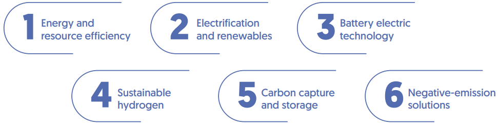
1.4 Updated 2nd NDC Highlights
More Ambitious Emission Reduction Target
The government of Oman has significantly revised its target for reducing net greenhouse gas (GHG) emissions by 2030. The new target now aims for a 21% reduction from the Business-as-Usual Scenario in 2030 (7% committed, 14% conditional). This a substantial increase from the previous NDC target of 7% in total (Figure 1). This target is contingent upon several factors, including international climate financing, technology transfers, the activation of Article 6 of the Paris Agreement, and support for capacity-building programs. Oman has already identified several ongoing and upcoming projects that are set to account for the country's targeted emissions reduction by 2030. The main approach for achieving these reductions will involve the implementation of energy efficiency measures and the adoption of green electrification technologies.
Oman GHG Mitigation Target Progression
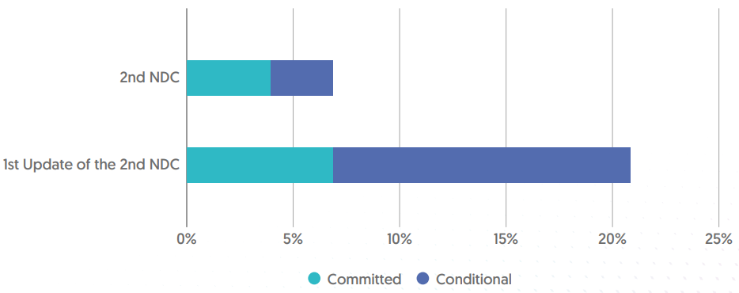
Figure 1. GHG Target Progression
The revision of NDC targets is a critical step in aligning a country's climate action plans with broader, long-term sustainability goals. In this context, the revised NDC is strategically designed to be in sync with the implementation of three major initiatives:
The 2040 Oman Vision2
The Sultanate of Oman’s National Strategy for an Orderly Transition to Net Zero3
Environmental Policy for the Energy Sector4
The NDC update report provides strategic direction to climate actions as an opportunity to unlock economic potential, particularly in sectors such as renewable energy, sustainable construction, efficient transportation, responsible water and waste management and showcase the Sultanate Oman’s commitment to the global climate cause. Moreover, the update report showcases strategic initiatives to achieve net-zero emissions by 2050, aligning its economic sectors with the objectives of the Paris Agreement.
Oman has adopted a bottom-up approach to establish an extensive national inventory using the Decarbonization Scenario Explorer (DSE) methodology, laying the groundwork for the implementation of Net Zero 2050. The updated NDC offers a comprehensive breakdown of emissions by sector and outlines strategic pathways to achieve net-zero emissions. To ensure accuracy, the process adheres to the IPCC QA/QC (Quality Assurance/Quality Control) guidelines for the GHG Inventory, with ongoing efforts to update the National Communication. Notably, the latest carbon emissions data from 2021 (90 Mt CO2) are now used as the baseline, replacing the previous 2015 data (96 Mt CO2) representing current technology processes . This revised baseline covers strategies across four pivotal sectors: industry, oil and gas, power generation, and transportation.
This update provides a detailed approach to better address vulnerabilities in specific sectors through strategic actions. This update reflects a commitment to adapt to the challenges posed by climate change and work towards a more sustainable and resilient future.
1.5 Stakeholder Engagement
Stakeholder engagement played a crucial role in Oman's past efforts to plan Vision 2040 and Net Zero Strategy 2050, and for successful implementation of NDC initiatives. Oman had recognized the paramount importance of involving a broad spectrum of stakeholders to ensure the comprehensive development and execution of its climate and sustainability objectives.
Stakeholder Engagement all relevant entities in a society-wide process included:
•All Government Departments through Carbon Lab: The consultations conducted by Oman's Carbon Management Lab serve as a central coordinating body that engages all government departments and Public Sector Companies in the implementation of Vision 2040 and the Net Zero 2050 Strategy. It facilitated interagency cooperation, aligned objectives, and ensured that climate and sustainability considerations were integrated into departmental policies and actions.
•Ministries: Various ministries in Oman play a pivotal role in achieving climate and sustainability targets. They are actively engaged in the planning and execution of sector-specific initiatives by the Environment Authority, Ministry of Energy and Minerals, Ministry of Commercial, Industrial & Investment Promotion, Ministry of Agriculture and Fisheries Wealth, Ministry of Economy, Ministry of Finance, and Ministry of Transport and Communications and Information Technology have collaborated to meet climate and sustainability goals.
•Banks and Private Sectors: The involvement of public financial institutions , such as the Ministry of Finance, Oman Investment Authority, and the Central Bank in combination with private sector entities, are essential for financing and implementing climate projects and sustainable practices.
•Academic Institutes: Oman's academic institutions such as Sultan Qaboos University play a crucial role in research and innovation in climate science. Collaboration with such an institution helps ensure Oman's climate strategies are backed by well-informed personnel and expertise.
•Non-Governmental Organizations (NGOs): NGOs, environmental organizations, and civil society groups provide valuable perspectives, awareness, community mobilization , and contributing to the success of environmental and climate related projects.
2. Adaptation and Resilience
2.1. Climate Vulnerability
The Sultanate of Oman faces significant challenges associated with climate change because of its hot and arid desert climate and its location within a region already experiencing the effects of climate change. Oman's temperature patterns are strongly influenced by various air masses affecting the Arabian Peninsula. During winter, the Polar Continental air mass brings cold temperatures and high pressure, while in summer, the Tropical Continental air mass brings extreme heat and dryness. Monthly average temperatures typically range from 10°C to 30°C (Figure 2). Since the year 1900 , Oman has experienced a consistent increase in its average temperature. Between 1901 and 2020, Oman’s temperature has increased with an average of 1.4°C (2.5°F) , surpassing the global average temperature increase of 1°C (1.8°F) during the same period5 (Figure 3).
Monthly Climatology of Min-Temperature, Mean-
Temperature, Max-Temperature & Precipitation 1991-2020 Oman
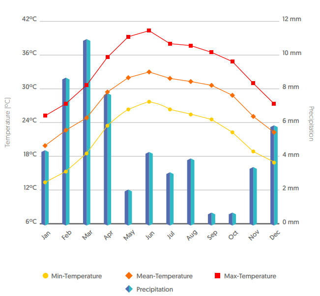
Figure 2: Monthly temperature & precipitation, Oman, world bank climatology
Observed Climatology of Mean-Temperature 1991-2020 Oman
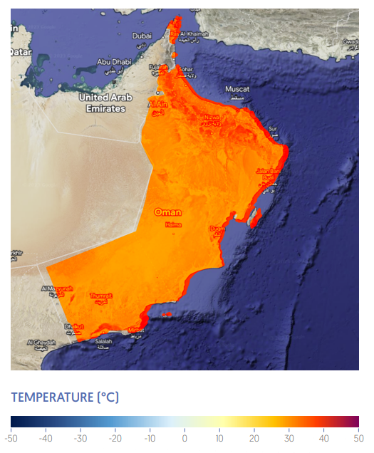
Figure 3: Observed Mean Temperature, Oman, world bank climatology
The mean temperature in Oman is projected to continue to rise in the future. The Intergovernmental Panel on Climate Change (IPCC) projects that the average annual temperature in Oman could increase by 2.6°C (4.7°F) by 2100 under a high emissions scenario
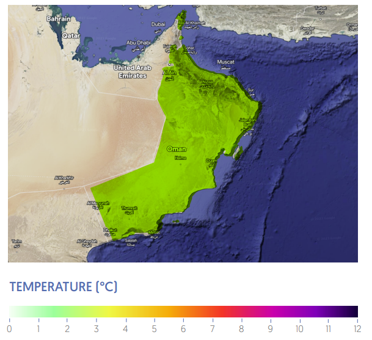
Projected Min-Temperature Anomaly for 2020-2039
Oman; (Reference Periond: 1995-2014), SSP2-4.5 & SSP5-8.5, Multi- Model Ensemble
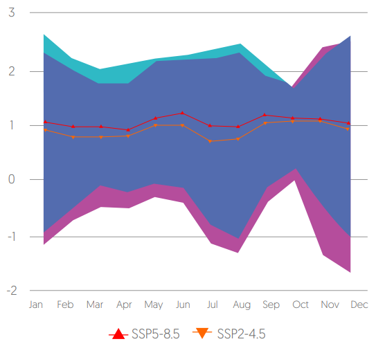
Figure 4. Projected Temperature in Oman
Representing a slight decrease since 1900, the average annual precipitation in Oman ranges from 80 mm to 100 mm. The reasons may be climate change related, causing the Arabian Peninsula to become drier. Additionally, it is anticipated that the average annual precipitation in Oman will continue to decrease in the future, which will have a significant impact on agriculture and water resources (Figure 5)
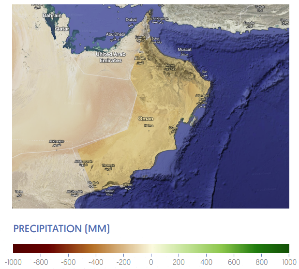
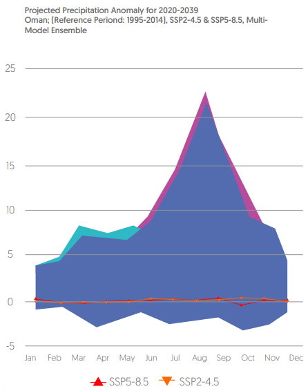
Figure 5. Projected precipitation in Oman
Albeit Oman’s precipitation annual average continues to decrease, the varying frequency and intensity of rainfall has been causing extreme weather events, such as floodings and cyclones. Notably, the recent occurrence of the Shaheen Cyclone on October 3rd, 2021, in coastal districts has highlighted the repercussions of this climatic shift. The cyclone, categorized as a 1st degree event, brought about substantial rainfall and a significant surge in sea waves, reaching up to 12 meters.
The aftermath of the Shaheen Cyclone has been marked by severe human and financial consequences. Official reports indicate that the estimated financial impact of the cyclone exceeds 200 million OMR, underscoring the tangible economic toll associated with such climatic occurrences. As precipitation patterns continue to evolve, it becomes imperative for stakeholders to address the escalating risks posed by these extreme weather events in order to mitigate their adverse effects on both human and economic fronts.
While Oman expects sporadic episodes of rainfall to become more intense, the overall average rainfall remains uncertain. This uncertainty is coupled with a higher likelihood of prolonged dry spells, exacerbating water scarcity issues, increasing drought intensity, and stressing ecosystems. Careful water resource management and agricultural practices will be critical to mitigate the effects of changing precipitation patterns, ensure food and water security, and address the growing challenges posed by increased drought severity.
2.2. Climate Sensitive Sectors
2.2.1. Water Resources
Oman’s water resources are primarily derived from groundwater and surface water. To meet the growing water demand for household consumption and other uses, Oman has implemented desalination and wastewater treatment plants. However, the country's water consumption still exceeds the resources available from renewable sources by approximately 25%. In regions where groundwater storage is scarce, there exists a potential threat to critical resources such as domestic water supplies and other essentials. Increased water scarcity will impact families' livelihoods, particularly in farming communities.
In coastal regions, excessive groundwater extraction has led to the intrusion of saline water, negatively impacting agricultural production and the environment. Rising sea-levels are impacting groundwater quality in critical aquifers due to salinization. Compared to other GCC countries, Oman’s per capita freshwater availability and consumption ranking is among the lowest6 . For instance, in the Qurm district of Muscat, the average annual household water consumption is estimated to be 519 cubic meters per year, while in the Seeb district, it stands at 440 cubic meters per year. These figures underscore the significant water consumption patterns in the GCC region, with Oman demonstrating relatively lower usage compared to its counterparts.
Oman is highly susceptible to extreme weather pattern natural disasters. Between 2000 and 2014, there was a discernible change in the severity of extreme rainfall events across the country, particularly in areas like Adam, Masirah, and Thumrait. These changing rainfall patterns pose a significant risk for future flooding. As overflowing waterways become more frequent and cause greater erosion, flooding and extensive infrastructural damage is more likely to occur.
One significant threat to Oman's groundwater quality stems from dynamic sea-level changes and thermal ocean expansion. Even conservative AR6 projections of sea-level rise present substantial risks to the integrity of Oman's aquifers. A good example of this can be observed in the Jamma aquifer located in south Al-Batinah, a region vital for agricultural activities. By the year 2070, even under low estimates of sea-level rise, approximately 8 square kilometers of agricultural land are expected to become salinized, rendering it unsuitable for cultivation. Additionally, nearly 2 billion cubic meters of groundwater will become unsuitable for irrigation, significantly affecting agricultural productivity
With a rich cultural and long history, fishing and aquaculture are two of Oman’s oldest and most significant economic industries. Prior to the discovery of Oil & Gas resources, these two old industries were important revenue generators. Although currently estimated to be only 0.5% to 2% of GDP, the fisheries sector is recognized as potentially important to the future of Oman. Hence, there is a need to improve overall management of the fishery sector to better prepare it for expected climatic impacts. The Sultanate has committed more than 1.2 billion USD to the fishery sector, mainly for building resilience in the sector. Additionally, Oman has expanded the area of natural reserves, in compliance with international laws, in order to be better utilized for economic investment.
Recent changes in the Western Arabian Sea have raised concerns about potential ecological consequences for Oman's marine biodiversity and commercial fisheries. Over the past five decades, significant shifts in the physical and chemical characteristics of this region have been observed. The gradual rise in ocean temperatures has reduced primary production due to increased stratification in the upper water column. Sea surface temperatures during the summer have risen by over 2°C since 1960 and by about 1°C at depths of 300 meters [7]. Additionally, salinity levels have been on the rise, increasing by approximately 0.1 parts per thousand per decade since 1950. These changes, coupled with increased acidity (resulting in a drop in pH), declining nitrate concentrations, reduced dissolved oxygen levels, and decreased chlorophyll-a concentration, have resulted in fish kill incidents and habitat compression for pelagic fishes.
The yields of yellowfin tuna and sardines in Omani waters have declined due to these changes. Catch Per Unit Effort (CPUE) data for both species indicate a significant reduction in recent decades. According to IPCC AR6 projections, the Arabian Sea is expected to see yield declines ranging from approximately 40% to 65%, while Oman's Exclusive Economic Zone (EEZ) is projected to experience reductions ranging from 28% to 68%.
2.2.3. Agriculture and Allied Sectors
In Oman, the agricultural industry plays a key role in the socioeconomic and developmental advancement of rural communities. The main agricultural products are date palms, fruits, perennial fodder, vegetables, and field crops. About 72,000 hectares of land, or 0.2% of the nation's total land area is irrigated and 72% of all farms are small farms. The agricultural sector in Oman must be sustained over the long term in order to protect the country's food supply as well as provide jobs, fight poverty, protect the most vulnerable populations including children, and raise living conditions in rural areas. 3.2 million tonnes of agriculture were produced in 2022 , with a 5.5 percent average annual growth rate from 2015 to 2021. According to the Global Food Security Index (GFSI), the Sultanate of Oman is ranked third among Arab nations and among the top 35 countries overall.
Earlier, most of the water for irrigation was obtained through the “Aflaj Irrigation Systems”, which is a United Nations Educational, Scientific and Cultural Organization (UNESCO) World Heritage system that reflects the historical water management practices. However, the water table along the Al Batinah coast, Al Sharqiyah region, has dramatically dropped, leading to a spike in the salinity of the wells and a considerable deterioration in water quality. This is mainly due to land cultivation occurring too close to the sea, a rise in sea levels and the extraction of well water surpassing the rate at which it can be naturally replenished.
Climate projections indicate that by mid-to-late century, under high emission scenarios, extreme heat will adversely affect crop growth rates. This scenario is primarily characterized by escalating temperatures and diminished rainfall, intensifying the existing challenges of water scarcity.
In 2017 and 2018, Oman was affected by drought conditions, which had an impact on agriculture and water supplies. The Food and Agriculture Organization (FAO) and the Sultanate of Oman have started a Green Climate Fund (GCF) preparedness program with the primary goal of strengthening the development of prioritized agriculture and water-related projects and concept notes.
Complicating matters, the COVID-19 epidemic has caused supply chain disruptions, turning Oman’s focus to strengthening its food security and the resilience of its food production. Oman is investing heavily in surface water harvesting infrastructure in order to boost water availability and to enhance water resource management. This includes building dams, reservoirs, and other water storage facilities to capture and store rainwater, especially during the rainy season, for use during drier periods.
2.2.4. Coastal Sector
In recent decades, Oman's coastal districts have gradually seen sea levels increase at a pace of 0.18 to 0.23 centimeters per year8, which is predominantly caused by climate change. According to IPCC AR6 forecasts, this trend foretells an increase in the frequency of high tide events along its coastline, exacerbating the technical difficulties faced by coastal populations and urban infrastructure. Furthermore, the climate change scenario of increased cyclone intensity in the region exacerbates these challenges. As a result, Oman has to deal with a variety of difficulties, such as coastline erosion, increasing groundwater salinity, and a higher danger of flooding in low-lying urban areas. The Sultanate of Oman is implementing proactive coastal defense tactics and creating extensive, long-term planning projects that consider the changing climate dynamics, especially the increased cyclone risk.
2.2.5. Urban and Infrastructure Sector
Oman's urban areas and tourist attractions are characterized by a dense population and a thriving commerce and industrial sector. These areas are increasingly vulnerable to major climate events. Recent cyclonic events, including Cyclone Gonu in 2007, Phet in 2010, Mekunu in 2018, and Shaheen Cyclone in 2021 resulted in significant loss of life, extensive infrastructural damage, and considerable economic setbacks. Urban flooding, a recurring issue in areas including the capital Muscat, often results from rapid urbanization and inadequate drainage systems, exacerbated by intense rainfall events.
The wadis in Oman, natural channels carved in the terrain, occasionally experience flash floods, especially during torrential rains, posing threats to adjoining settlements. Coastal cities, such as Salalah, have witnessed the devastating impacts of storm surges, particularly during events like Cyclone Mekunu in 2018.
Additionally, these cities' key infrastructures sustained severe damage, rendering multiple roads, electricity towers, water and wastewater networks, health centers, and communication infrastructure inoperable. This underscores the imperative to enhance the resilience of overall infrastructures while also expanding their accessibility to the entire population.
The heat island effect, more pronounced in rapidly expanding urban centers like Sohar, elevates local temperatures due to concrete structures and decreased vegetation, further intensifying the naturally occurring heatwaves in the region. In addition, the air quality in major cities is also deteriorating due to the dust storms. These climate stressors, interplaying uniquely in each urban area, underscore the necessity for comprehensive adaptive measures. The Al-Batinah region is predicted to be the most vulnerable. Oman's sensitivity to a variety of climate-related problems, makes climate threats to urban areas a substantial and varied concern.
2.2.6. Public Health
As a consequence of the ongoing global warming trend, Oman faces an elevated risk of heat-related ailments, including heat exhaustion and heatstroke, owing to the intensification of high temperatures. Additionally, due to climate-related changes, disease vectors' habitat ranges are expanding, especially for mosquitoes, which increases vulnerability to vector-borne illnesses including malaria and dengue fever, both of which are major causes of mortality among children globally. Due to the increased frequency of dust and sandstorms driven on by climate change causes, the population may experience deteriorating respiratory illnesses and cardiovascular health problems as a result of the poor air quality. The rising intensity and frequency of extreme weather events, including tropical cyclones, increase the risk of accidents, population displacement, infectious disease epidemics, and threats to the healthcare system. Beyond these obvious health dangers, it is important to give particular focus to how climate change may affect people's mental health as a result of ongoing stress, and disruptions to their way of life.
When it comes to Oman’s most vulnerable groups, the children are more exposed to heat waves, as well as other health problems including chronic respiratory conditions, asthma, and cardiovascular diseases. The increasing intensity and frequency of dust storms put children at a higher risk of exposure to micro-particles and acute respiratory tract infections, and increased risk of respiratory diseases, cardiovascular diseases, and cardiopulmonary diseases.Although in terms of Crude Death Rate (CDR), Infant Mortality Rate (IMR), Under-Five Mortality Rate (U5MR), the Sultanate of Oman has made notable advancements over the previous forty years.
Oman affirms with Article 7 of the Paris Agreement and the Global Goal on Adaptation that adaptation is crucial for addressing the negative consequences of climate change and improving climate resilience. Oman is dedicated to strengthening its capacity for adaptation to protect its people and infrastructure given the region's vulnerability to the effects of climate change and the desert environment. With the support of the Green Climate Fund, Oman is now developing its National Adaptation Plans (NAPs). The Environmental Authority (EA) is working with the United Nations Industrial Developemnt Organization (UNIDO). Additionally, in a number of the nation's climate-sensitive sectors, adaptation measures are being planned and implemented through various programmes.
A monitoring group for the execution of Oman Vision 2040 has been established featuring a strong planning framework to ensure the smooth operation of the Vision 2040. Since its establishment in January 2021, it has worked in conjunction with pertinent organizations to develop an extensive planning framework. Each organization contributes to an integrated follow-up system that includes planning, execution, monitoring, and reporting stages, playing a critical role in attaining the Vision's objectives. Several initiatives have been undertaken to achieve Oman Vision 2040, boosting the overall framework. To assure the completion of the system's components, the monitoring group is committed to effective collaboration with all concerned parties.
The table below provides a detailed analysis of adaptation measures currently in place or planned by the Sultanate. These measures encompass initiatives and policy actions in climate-sensitive sectors identified in section 2.2 above.
Table 1. Adaptation Measures
|
Sector |
Area |
Current Measures |
Planned Measures |
|
Water Resources |
Irrigation Requirements |
Ministry of Regional Municipalities and Water Resources is actively developing its National Water Strategy, which is grounded in circular economy principles. This strategy focuses on adopting water-saving technologies, optimizing water allocation, and promoting efficient water use across various sectors, particularly in agriculture. |
Oman is actively planning to secure a consistent and sufficient water supply for irrigation, even in the face of changing climatic conditions. This strategic action is aimed at bolstering the resilience of the agricultural sector and ensuring continuous food production. |
|
The Ministry of Agriculture and Fisheries has authorized comprehensive water irrigation management practices. This initiative aims to enhance the efficiency and sustainability of the irrigation sector, which is crucial for agriculture in the face of changing climate conditions. |
Oman has outlined plans to implement water pricing mechanisms that accurately reflect the true cost of water use in agriculture. Simultaneously, the government is preparing to offer subsidies to efficient water users as part of a comprehensive strategy to encourage sustainable water practices. |
||
|
Recognizing the cultural significance and vital role of the Aflaj Irrigation System, Oman is committed to its preservation and conservation. This ancient system serves as a primary water source for a substantial portion of the population, making its protection a top priority. Moreover, under Royal Decree No. 374/1992 a national computerized well and Aflaj inventory was established to assess the quantity and quality of groundwater and its use. |
Prepare a comprehensive approach to water resources management, which will be confined to and diligently implemented in all catchments across the country. This proactive measure is intended to safeguard and sustainably manage water resources in diverse geographic regions. |
||
|
Oman has strategically developed twelve artificial rain seeding stations in specific regions to mitigate the impact of droughts. This proactive approach enhances water resources and helps maintain agricultural productivity during dry periods. |
|||
|
Water Resources |
Oman has initiated experimental projects to explore the use of treated water in various applications. These projects include the utilization of treated water at locations like Shakhakhit farms in Barka and the Wadi Dayqah Dam tourism development project, promoting sustainable water practices. |
||
|
Oman is actively promoting water conservation efforts, particularly through the adoption of micro-irrigation techniques and greenhouse technologies. These measures optimize water usage in agriculture and other sectors. |
Supreme Council for Planning revealed that Oman is set to invest USD 7 billion in the next 20 years – averaging USD 381 million per year – to develop wastewater treatment plants and extend sewage network lines across the country. This initiative will be carried out through the National Strategy for the Use of Tertiary-treated Wastewater 2040 program. |
||
|
Oman has implemented regulations and introduced the Royal Decree No. (82/1988) to control the drilling of new wells and manage the extraction of water from existing ones. such regulations will ensure the sustainable utilization of groundwater resources, considering the challenges posed by climate change. |
|||
|
Oman is investing in the development of wastewater treatment plants with some of these plants using membrane bioreactor technology (MBR) such as Madinat Al Sultan Qaboos and Shattie Al Qurm. Moreover, Royal Decree RD 114/2001; states that “it is prohibited to discharge hazardous waste and substance and other environmental pollutants in wadis, watercourses, groundwater recharge areas, rainwater, flood drainage system or Aflaj and their channels discharge systems.” It is also prohibited to reuse or discharge treated wastewater without obtaining a permit. |
|||
|
Water Sector Decarbonization |
Oman is developing decarbonization desalination plants and is focusing on water reuse through the use of renewable energy sources. Currently, Sur desalination plant with an 80,000 m3/day capacity is the first facility of its kind in the Sultanate of Oman and the wider Middle East region, to be powered by renewable electricity. |
Promote the use of renewable energy resources for water supply, desalination, treatment, and distribution. |
|
|
Fisheries and Marine |
Improved Water Resources Management |
The National Water Sector Master Plan (2015-2040) has been developed for sustainable management of water resources in Oman. The plan includes a number of initiatives for water conservation, such as the promotion of water-efficient appliances and the development of rainwater harvesting systems. |
Improve water demand management plans and reduce the gap between supply and demand. |
|
Oman Water Index is an indicator that gauges the quantity of water to meet a variety of demands, such as those for drinking, irrigating crops, industrial uses, and source sustainability measures. The water index has improved by 5%, increasing from 488 million cubic meters in 2021 to 513 million cubic meters in 2022. |
|||
|
Awareness and Monitoring |
Oman is strengthening data quality management at local Aflaj Authorities level in Al Dakhiliyah Governorate, is updating flood hazard maps , upgrading gauge station equipment, and monitoring flash flooding threats. |
Strengthen data management systems at the national level and to improve local capacities for data management, monitoring, and reporting. |
|
|
Groundwater Recharge |
Oman is implementing the Al Batinah Coastal Aquifer Recharge Project through the injection of treated wastewater into coastal aquifers. |
Promote groundwater recharge through treated water and establish water quality standards for aquifers receiving treated sewage water. As well as implement a groundwater quality monitoring program. |
|
|
Conservation of Fisheries |
Fisheries Development of Oman (FDO) and Oman Aquaculture Development Corporation (OADC) are advancing the climate-resilient fisheries management through monitoring and assessing the impact of climate change on fish stocks and adjusting catch limits. FDO and OADC also work on preventing overfishing and protecting vulnerable species by helping local entrepreneurs and businesses adopt sustainable fish farming. |
Undertake long term climate vulnerability studies within the fisheries sector to analyze the climate impacts on physiology, life cycles, and environment of aquaculture species. |
|
|
Fisheries and Marine |
Conservation of Fisheries |
The Marine Science and Fisheries Centre in Muscat is conducting studies on the breeding habits of fish. The center is also monitoring changes in their migration patterns caused by warming waters. |
Facilitate greater stakeholder engagement with an emphasis on the domestic and international large scale tuna fisheries, regional king fisheries, and high value domestic species (like abalone and cuttlefish), which are facing the greatest economic and climatic challenges. |
|
The Marine Science and Fisheries Centre in Muscat is conducting studies on the breeding habits of fish. The center is also monitoring changes in their migration patterns caused by warming waters. |
|||
|
Oman is also implementing and enforcing sustainable fishing practices to prevent overfishing, such as the use of specific net sizes, seasonal fishing bans, and restrictions on catching juvenile fish. |
|||
|
Oman is also promoting aquaculture projects, such as Al Jazeera shrimp farm, Al Bustan fish farm to reduce pressure on the coastal fisheries. |
|||
|
Oman is also enhancing the resilience of fishing infrastructure, such as harbors, fish markets, and processing units, to withstand extreme weather events and rising sea levels. |
|||
|
The Environment Authority has undertaken a nationwide survey of flora and fauna. |
|||
|
Development of Marine Protected Areas (MPA) and Coastal Zone Management |
The first MPA, the Dimaniyat Islands, formed in 2003 to protect against human activities, such as fishing, anchoring, and the disposal of waste that can harm marine life. |
Formation of more MPAs in Oman to protect the country's marine resources for future generations. |
|
|
The Coastal Protection Strategy aims to protect Oman's coastline from the impacts of climate change, such as rising sea levels and coastal erosion. The strategy includes a number of initiatives to improve coastal infrastructure and to restore coastal ecosystems |
Integrate mitigation capacities of other coastal and marine ecosystems through mangroves related Nature Based Solutions (NBS). |
||
|
Oman coastal zone management programme's overall goal is conservation and management. Hence, certain designated mangrove areas are protected zones or nature reserves. |
Draft the blue carbon strategy for the management and restoration of the mangrove conservation. |
||
|
Oman has been developing a new act that aims to conserve and restore the mangroves for their ecosystem services, it also helps build climate resilience. |
Govern the EWS with tools needed to make the system more time efficient. |
||
|
Oman is developing an Early Warning Systems (EWS) for extreme weather events, such as cyclones or harmful algal blooms. |
|||
|
Agriculture |
Food Security, Diversification of Crops, and Livestock Management |
Food security effort have been dictated by OFIC and Tanfeedh, the government initiative tasked with bringing together various sectors with the goal of diversifying national income resources. Fisheries is one of five sectors – along with manufacturing, tourism, transport and mining – prioritized for development under Tanfeedh. |
Promote sustainable agriculture by diversifying its agricultural activities, cultivating climate--resilient and high-value crops that have the potential to access domestic and international markets, and reducing reliance on traditional crops |
|
Oman is employing treated water resources in collaboration with an energy investment firm, OQ, to support the cultivation of fodder crops, while concurrently implementing expansive initiatives for large-scale tree planting, both in productive tree plantations and to counter desertification |
Enforce sustainable livestock management practices to control overgrazing and to maximize local breeding instead of livestock imports. |
||
|
Water Use Efficiency |
Long sea defense dams are being constructed at Khor Al Rustaq in the city of Sur to prevent the intrusion of surface saline sea water and to withhold part of the Wadi waters for recharge and leaching. |
Develop various governorates in rainwater drainage and sewage water treatment in order to target 550-600 million cubic meters/person to 650-700 million cubic meters/person - generation of water quantity through advanced methods. The Sultanate is planning to enhance water use efficiency in agriculture drip irrigation, efficient water delivery systems, water reuse, soil moisture conservation, and rainwater harvesting, among other practices. |
|
|
Native Tree Plantation Initiatives |
Oman has launched a nationwide initiative to plant 10 million natural trees, including apicals, acacias, and Ziziphus Spina-Christi (Sider), to combat desertification, improve air quality, and reduce temperatures in populated areas. Additionally, Million Date Palm Plantation Projects in Ibri, Nizwa, Al Safa, Rahab, and more areas have been initiated. |
Promote the adoption of efficient irrigation methods, such as drip and sprinkler irrigation, to conserve water resources and ensure crops receive adequate moisture; even during periods of reduced rainfall. |
|
|
Sustainable Agriculture Strategy |
In 2016, the Government of the Sultanate of Oman unveiled the Sustainable Agriculture and Rural Development Strategy towards 2040, commonly referred to as SARDS 2040. This strategic initiative is designed to offer comprehensive programmatic and policy direction, guiding investments in the Omani agriculture and rural sector. The sectoral plan outlines a framework for activities spanning up to the year 2040 |
Develop a comprehensive strategy in line with the National Adaptation Plan to combat desertification, manage aquifer desalination, promote soil conservation through extensive plantation programs, and establish measures to mitigate the effects of water salinity on agriculture. |
|
|
Technology Adoption |
Omani Agriculture Association has initiated projects that include smart-technology in fields, thus reducing the overall costs of technology (Periodical Newsletter issued by the Ministry of Higher Education, Research and Innovation). This holistic approach fortifies Oman's agricultural sector against climate-induced challenges, while fostering sustainability and diversity. |
Adopt modern agricultural technologies and practices including advanced irrigation systems and improved farming techniques, to boost agricultural productivity. |
|
|
Urban areas and Infrastructure |
Developing Smart Cities and Climate Resilient Infrastructure |
-The Sultan Haitham Smart City initiative is currently in progress, with plans for its development catering to a population of approximately 100,000 residents in close proximity to Muscat. -development of Oman spatial planning strategy and extensive master plans for all governorates, -development and upgrade of state of the art integrated road network. -Investment in construction of large numbers of storage and protection dams. -Development and upgrade of communication networks, reaching every resident in Oman. -Construction of integrated power supply network including generation plants, distribution networks. -Development of integrated water desalination and distribution networks. |
Establish smart cities utilizing advanced services and modern technology. |
|
Storm Surge Analysis and Inundation Modelling |
The Civil Aviation Authority conducts disaster management studies, using tools like ATLAS and Storm Search, to identify flood-prone areas during tsunamis and extreme events. |
Conduct vulnerability analysis to come up with scenarios for the year 2100 in order to determine the degree of land flooding caused by rising sea levels. |
|
|
Coastal Vulnerability Index (CVI) has been launched to prioritize vulnerable urban areas. |
|||
|
Transportation Planning |
As part of its urban planning adaptation efforts, Oman is actively promoting the adoption of electric vehicles to reduce carbon emissions. The Minister of Energy and Minerals is leading an initiative to incentivize electric vehicle usage, in line with the Net Zero 2050 Agenda's annual target of 0.85 tons per capita carbon emissions. These measures include integrating self-driving electric vehicles and establishing charging infrastructure to lower Oman's urban carbon footprint. |
Develop urban transportation plans to reduce emissions and promote public transportation options. These efforts aim to reduce traffic congestion and improve air quality in urban areas. |
|
|
Waste Management |
Oman Environmental Service Holding Company (be’ah) was established by Royal Decree No. 46/2009 and was granted the mandate and the legal status as the entity responsible for solid waste management in Sultanate of Oman. Be’ah is set to launch a biogas facility by 2026, the facility will convert organic waste from industrial food sources into valuable biogas for sustainable energy. |
Conduct in-depth examination of the governance of its Waste Management Sector with the objective of accelerating its evolution into a thriving economic sector aligned with the principles of a circular economy |
|
|
Oman is promoting secondary material use over primary resources, and is establishing a global secondary market exchange for recycled materials. Moreover, the Sultanate has also launched the National Waste Management Registry on the Environment Authority’s website. |
|||
|
Oman is putting extended producer responsibility initiatives into place, encouraging recycling and eco-friendly product design. |
|||
|
National Building and Design Codes |
Oman is developing national building and design codes to enhance community resilience. These codes ensure that structures can withstand climate-related challenges, while contributing to environmental stewardship and community well-being. These codes will play a crucial role in ensuring that buildings and structures are built to withstand climate-related challenges like heatwaves, storms, floods, and damages with low carbon footprint |
Adopt Climate-resilient policies for designing national building codes. |
|
|
Urban Greening Directives |
The National Urban Development Strategy, designed with a forward-looking perspective spanning the next 20 years, is centered on achieving development objectives while fostering sustainability |
Expand smart green cities (the use of innovative materials to reduce demand for traditional energy). |
|
|
The Ministry of Housing and Urban Planning developed guidelines for urban greenery with the goal of enhancing green cover and reducing the heat island's effects, with an emphasis on urban areas. |
|||
|
Public Health |
Climate-Resilient Health System |
Oman is accelerating the implementation of the One-Health System, which aims to achieve sustainable balance and improve human, animal, plant, and ecosystem. |
Adapt healthcare facilities for the complexity of upcoming climate patterns, this crucial evaluation will ensure their resilience and effectiveness. |
|
Conduct a thorough evaluation of their medical facilities by the end of 2023 in order to determine how well-equipped Oman is to handle the challenges posed by climate change and how well-prepared they are to adapt to changing weather patterns |
|||
|
Public Health |
Knowledge Expansion and Raising Awareness |
In compliance with the royal directives of His Majesty Sultan Haitham bin Tarik, a central public health laboratory for all health disciplines has been lunched in Feb, 2023. The lab will promote health and prevent diseases by taking a lead in laboratory science activities and supporting public health and environmental conservation efforts |
Increase research capacity to assess the health consequences of climate change within the country. |
|
Raise public awareness about the adverse health effects of climate change and intensify disease prevention and health promotion. |
|||
|
Enhancing Accessibility and Resilience |
-Oman has developed the standards for Ambient Air Quality (AAQ). Currently there are 3 monitoring stations installed in Rusail, Rasisout harbor and Sohar Industrial areas. Several activities are developed in other areas such as chemical safety, food safety, occupational health and safety and injury prevention. -Development of integrated and state of the art health system including primary, secondary and tertiary treatment facilities. |
Develop local data driven health models (HUMDIX, THI etc.), improve health monitoring, and develop preparedness and response strategies for vectors |
|
|
Disaster Preparedness |
Data-driven Readiness |
National Committee for Civil Defense (NCCD) coordinates disaster preparedness and agencies during emergencies. |
Undertake sectoral vulnerability studies and response plans |
|
The Civil Aviation Authority performs accurate weather forecasting and employs advanced techniques to predict weather patterns and extreme events |
Establish effective inter-ministry, public-private SOPs, and communication channels to ensure readiness in times of adverse. |
||
|
Oman is currently implementing the National Emergency System which is designed to coordinate the response of various agencies and provide real-time information during disasters. |
Invest in physical infrastructure and computational resources to obtain more data and produce better analysis results. |
||
|
Oman has strategically established shelters equipped with essential amenities, particularly in regions that are more susceptible to cyclones and floods. This proactive approach ensures that citizens have access to safe havens during times of disasters |
|||
|
Oman collaborates with international organizations, such as the United Nations and the World Health Organization, to learn the best practices in disaster preparedness and response |
|||
|
Oman is working to ensure that its infrastructure; roads, buildings, communication systems, and more, can withstand extreme events. This includes designing structures that can endure flooding or cyclonic winds. |
|||
|
Oman has invested in early warning systems that use satellite data and other technological tools to provide timely alerts to vulnerable communities. |
3. Mitigation Pathways
3.1. Updating the baseline year 2023
In alignment with the Net Zero 2050 Strategy, Oman has shifted its NDC baseline year from the initial 2015 to the year 2021. This strategic shift was carefully considered, taking into account various factors. As seen in Figure 6 below, using a bottom-up analysis, the baseline was created by triangulating reported data on emissions, activity levels, and the energy consumption, ensuring that emissions measurements are accurate and reflect current circumstances. Additionally, projections for economic and energy sector growth were carefully re-assessed through economic modeling and energy sector analysis, providing a holistic view of emissions trends.
Importantly, the baseline year update acknowledges the unique and unprecedented challenges posed by the COVID-19 pandemic, including the decline in economic activity, business closures, and the shift to remote work. All of which had a noticeable impact on emissions across various sectors. Overall, the decision to update the baseline year to 2021 emphasizes Oman's commitment to precision, transparency, and adaptability to its climate action efforts, ensuring that its NDC remains reflective of the ever-evolving global climate landscape. Baseline adjustment has also been applied for all (sub)sectors and industries to account for the COVID-19 effect using data sources such as National Transport Model, National Centre for Statistics & Information, GHG Lab Oman Vision 2040, etc.
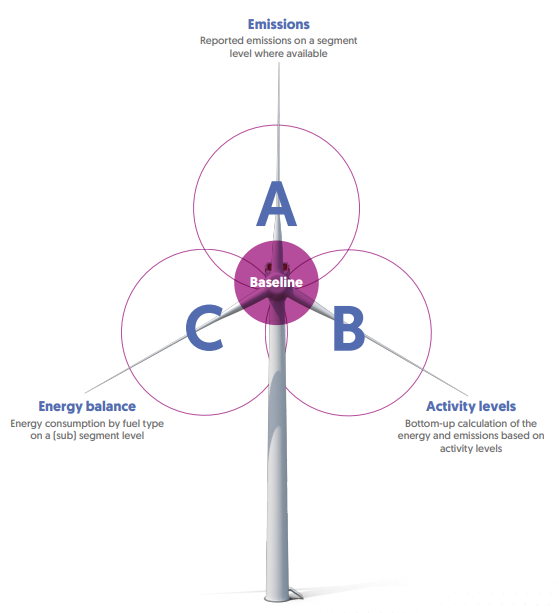
Figure 6. Baseline Bottom-Up Analysis
Based on the historical patterns and observed trends, in the absence of any significant mitigation efforts or transformative actions, the Business-As-Usual (BAU) was projected from 2021 to 2050, as depicted in Figure 7 below. This BAU scenario provides a visual representation of potential outcomes if sustainable interventions are not enacted. The figure illustrates how emissions, resource consumption, and other critical indicators are likely to evolve within this timeframe, following the trajectories set by existing demographic shifts, economic growth patterns, technological advancements, and policy dynamics.
In this period, without deliberate mitigation measures, emissions are likely to rise in tandem with increased industrialization, urbanization, and energy consumption.
The energy sector, which includes Power, Industry, and Oil & Gas, is expected to remain a primary driver of emissions that is influenced by a growing demand for energy as economies expand. Similarly, the Transport sector may see growing emissions due to the growing number of vehicles and limited adoption of cleaner transportation technologies.
The Building sector might experience an increase in emissions as urbanization continues, leading to higher demand for infrastructure and housing, which will be reflected in increased energy consumption. Agriculture, though subject to yield improvements, could still contribute to emissions due to conventional farming practices and livestock production. These projections underscore the importance of transitioning to more sustainable agricultural methods.
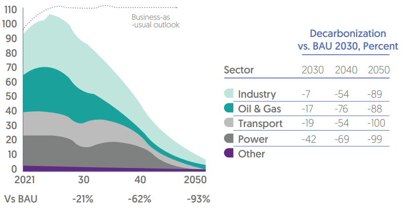
Figure 7. Oman's Orderly Transition to Net Zero 2050
Within this BAU framework, economic growth may elevate living standards, but it might also be accompanied by a commensurate increase in resource consumption and waste generation.
Biodiversity loss and environmental degradation could intensify as ecosystems face heightened pressures. The BAU analysis depended on forecasting four main areas:
The population forecast: Based on the Spatial Strategy and the UN World Population Prospects for High fertility scenario
The GDP forecast: Based on Oman 2040 Vision document
Oil and Gas Production forecast: Based on the Ministry of Energy and
Mineral (MEM) data and on external Global Energy forecast, which calculates production from countries based on global demand and global supply cost curve
Oman's updated NDC builds upon a foundation of economy-wide targets and a revised base year, encompassing all domestic sectors, including land use, land use changes, and forestry. The commitment extends to the comprehensive coverage of all national GHG emissions, including Carbon Dioxide (CO2), Methane (CH4), and Nitrous Oxide (N2O). Notably, the current iteration of Oman's NDC includes emissions from Fluorinated Gases (F-gasses) in the Industrial Sector only, while inventory research on these gasses is ongoing for other sectors. However, Oman plans on their inclusion for all sectors in future NDC submissions, aligning with international agreements such as the Kigali Amendment and the Montreal Protocol. Thus, Oman's regulatory framework is being updated to effectively address F-gasses emissions in all sectors, being in alignment with global best practices.
Oman's NDC includes emissions from domestic aviation and shipping, which falls beyond the normal scope of an NDC, underscoring the country's commitment to mitigating these sources. It is important to note that local entities are actively contributing to the reduction of emissions in these sectors. Oman's strategies include promoting Sustainable Aviation Fuels (SAFs) and exploring the potential of green shipping corridors, which are specialized maritime routes aimed at showcasing low-emission shipping fuels and technologies. Oman's support for the decarbonization objectives outlined by the International Civil Aviation Organization (ICAO) and the International Maritime Organization (IMO) further highlights its dedication to global emissions reduction goals.
3.4. Progression of Mitigation Targets
Oman has committed to achieving net-zero emissions by developing a well-balanced and systematic strategy, embracing an orderly transition pathway.
Looking ahead to 2030, there is a concerning projection of a 13% increase in emissions in the industrial sector compared to the levels recorded in 2021. This uptick is primarily driven by the expansion of industrial activities, particularly in sectors like petroleum refining, petrochemicals, cement production, aluminum manufacturing, as well as iron and steel production. Within the Net Zero 2050 strategy, the Industrial sector is a focal point, as it currently contributes a significant 32% of all GHG emissions based on validated data from 2021. Addressing this growth in emissions is pivotal, as Oman strives to meet its sustainability goals and create a more environmentally responsible future.
The Oil and Gas sector, renowned for its proactive stance on emissions reduction, charts a course to achieve 7% emissions cut by 2030. Anchored in cost-effective decarbonization strategies, this journey hinges on energy efficiency enhancements, the repurposing of captured natural gas, and the electrification of upstream production processes, all aiming to wield substantial influence.
Anticipating a transformation in the landscape of transportation, the sector casts its aspirations towards a 3% reduction in GHG emissions by 2030. This forward-looking trajectory envisions the integration of diverse solutions such as the proliferation of Electric Vehicles (EVs), the utilization of Hydrogen Fuel Cells (HFCs) for heavy-duty vehicles, and the widespread adoption of biofuels. Collectively, these efforts form a comprehensive strategy to reduce emissions.
In the power sector, fossil fuels (mainly natural gas) account for approximately 92% of power generation, which prompts for immediate transformative interventions. A notable 80% of electricity consumption is attributed to the buildings and residential sector, which anticipates surges due to population growth. As the population grows, the expansion of housing is expected to lead to a 90% increase in energy consumption by 2050. In this context, the introduction of green hydrogen, harmonized with wind and solar energy, is a critical step in addressing these challenges, as it aligns with the sectors targeted 3% reduction in emissions by 2030.
In Oman’s pursuit of achieving the net-zero emissions target by 2050, Oman has structured its efforts into two key categories: Priority decarbonization measures, and system decisions and selections. The first being the most cost-effective ways to reduce emissions, the second involves making decisions that may include trade-offs in order to tackle challenging emissions sources.
The identified priority decarbonization measures are expected to contribute significantly to Oman’s five objectives to reach net-zero, representing half of the total emission reduction Oman aims to accomplish by 2050, spanning various sectors, with a primary focus on industry, Oil & Gas, power generation, and transportation (Figure 8). Other sectors, including Agriculture, Land Use and Land Use Change and Forestry (LULUCF), Waste, and Hydrogen, collectively amount to less than 5% of the total emissions in the orderly transition to Net Zero pathway, and thus are not shown in detail in the mitigations levers section.
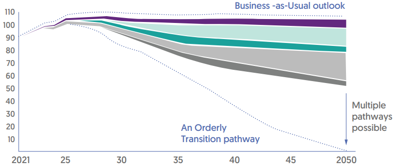
|
Industry |
Electrify low/medium-temperature heat across indusries feedstock changes in steel, cement, PetChem, and selective grid connections |
|
Oil & Gas |
Electrify low/medium-temperature heat and implement efficiency improvements, LDAR for fugitives, and repurpose/export flared gas |
|
Transport |
Wide transition to EVs2 and H2-fule cells for long-distance trucks and buses, behavioral changes reducing car usage, biofuels blending for lower for lower emissions from ICE3 vehicles |
|
Power |
Deploy renewable power generation at large scale, mainly driven by solar PV and onshore wind. In the Buildings subsector, improve insulation standards for new builds, improve energy effciency of air conditioning units and other electrical equipment. |
|
Other |
Agriculture, LULUCF, Waste, and Hydrogen |
Figure 8. Priority levers across the main sectors
By 2030, Oman aims to lower emissions by 21% compared to the Business-as-Usual scenario, followed by a 54% reduction by 2040, and an ambitious 92% reduction by 2050. This strategic trajectory leaves Oman with a "last mile" challenge, constituting approximately 8% (7 million CO2e) of emissions, which needs to be addressed to attain Net Zero emissions by 2050.
To bridge this remaining gap, Oman has identified several key strategies. First, Oman intends to leverage breakthrough decarbonization technologies that hold the potential to significantly reduce emissions. Additionally, Oman is exploring the possibility of utilizing engineered or natural negative emissions methods, such as Direct Air Capture (DAC) of carbon with subsequent storage in depleted reservoirs or the expansion of
In 2021, Oman's power sector emitted 19% (17.1 MtCO2e) of total emissions. By 2050, power related emissions could rise by 58% (up to 26.91 MtCO2e) due to increased electricity demands. Oman targets net-zero emissions with 60% renewables (solar, wind) and decarbonization (gas, CCS, potential nuclear) for the remaining 40%.
Table 2. Power Sector Basline, BAU, and Target emissions
|
Baseline GHG Emissions in 2021 |
17.1 MtCO2e |
|
BAU GHG Emissions by 2030 |
21.37 MtCO2e |
|
Mitigation Target by 2030 (Percentage from BAU) |
42% |
The table below provides a detailed analysis of the Power sector related mitigation measures currently in place or planned by Oman. These measures encompass initiatives and policy actions. The buildings sector reductions policy levers, and initiatives have been included within the power sector, as most measures will result in energy consumption reduction (in the form of electricity savings).
Table 3. Power sector policy levers and future initiatives
|
Area of Interest |
Current Policy Levers |
Future Initiatives and Incentives |
|
Renewable Energy Projects |
The National Energy Strategy aims to increase the share of renewable energy in the energy mix to 35-39% by 2040. The strategy includes a number of initiatives to promote renewable energy, such as the development of solar and wind power projects. Example of commissioned RE projects:
|
Example of planned RE projects:
|
|
Government Subsidies |
Introduction of Sahim Residential Initiative that allows wide-scale deployment of grid-connected photovoltaic (PV) systems in residential premises throughout Oman in addition to the Accelerated Subsidy Adjustment Scheme (ASAS) extending solar panel subsidies, providing subsidies for residential solar panel installations and advancing solar investment program promoting solar investments and incentives. |
Introduce a Net-Metering scheme allowing excess electricity sales to the grid in addition to other incentives and subsidies such as Green bonds by the central bank to encourage renewable energy adoption. |
|
Transition to Cleaner Energy Sources |
The Environmental Authority (EA) actively promotes investment in solar energy to increase the green energy mix. This involves creating favorable conditions and incentives for solar power projects, encouraging the transition to renewable energy sources. |
Planned retirement of all diesel power plants by 2028, shifting to cleaner and sustainable energy sources. In addition, hybrid solar and wind power plants will be utilized for load management purposes. By combining these renewable sources, the supply of electricity can be optimized, ensuring stability and reliability. |
|
Sustainability Initiatives |
The provider of electricity, water and wastewater services has prepared strategic planning initiatives for the next 7-years, planning to implement a range of renewable energy projects and has dedicated a focused 5-year blueprint to enhance transmission infrastructure |
Continued focus on sustainability and energy efficiency across sectors. |
|
Buildings Subsector |
||
|
Enhanced Energy Efficiency |
Oman has taken many steps in the area of energy efficiency in buildings. Some of which are as follows: -Implementation of energy efficiency standards for appliances (Energy Efficiency Ratio - EER) to reduce overall energy consumption. -Inspections and enforcements to ensure compliance with standards. -Pilot funding programs to establish Energy Service Companies (ESCOs) who offer energy-efficient solutions to clients. |
|
|
Protection of Ozone Layer |
The Ministry of Environment has set assessments and regulations of refrigerant gases used in appliances to prevent harm to the ozone layer, banning the use of ozone-depleting gases. |
Allocation of budget for R&D of environmentally-friendly technologies. |
|
Transition to LED Lighting |
The Ministry of Housing and Urban planning is promoting the transition to LED lights for lower power consumption and reduced energy-related emissions. |
Advancement of lighting standards to further improve energy efficiency. |
In 2021, Oman's oil and gas sector contributed to approximately 26% (22.9 MtCO2e) of total emissions. Looking forward to 2050, a substantial reduction of 88% in emissions from the BAU is anticipated through the orderly transition strategy.
Table 4. Oil and Gas Sector Basline, BAU, and Target emissions
|
Baseline GHG Emissions in 2021 |
22.9 MtCO2e |
|
BAU GHG Emissions by 2030 |
25.33 MtCO2e |
|
Mitigation Target by 2030 (Percentage from BAU) |
17% |
The table below provides a detailed analysis of the Oil and Gas sector related mitigation measures currently in place or planned by Oman. These measures encompass initiatives and policy actions.
Table 5. Oil and Gas sector policy levers and future initiatives
|
Area of Interest |
Current Policy Levers |
Future Initiatives |
|
Decarbonization Measures |
The work is ongoing for the implementation of natural gas capture and repurposing like Sadad North Gas recovery project and Saih Rawl-CPP flare recovery project, as well as the electrification of upstream production facilities and instruments. Furthermore, the Ministry of Energy and Minerals is collaborating with private sector companies to identify suitable locations for a Green Fuel Hub (Hydrogen or Ammonia) |
-Increasing renewable energy generation and enhance the electrical grid in order to enable the electrification of the LNG terminals. -Extensive initiatives to map out CO2 sources and identify CO2 appropriate sinks focusing on CO2 utilization and storage opportunities across key parts in Oman. |
|
Cross-Sectoral Projects |
-The Ministry of Energy and Minerals is exploring potential projects in the field of Carbon Capture, Utilization, and Storage (CCUS) technology. The goal is to scale these technologies to become financially viable -Renewable energy projects like Amin solar PV, Miraa solar to steam, solar car parks initiatives. |
Replacement of existing infrastructure (pipelines, assets) to eliminate remaining emissions. |
|
Alternative Energy Efforts |
Examples of alternative energy efforts: -Conversion of three single cycle power plants to combined cycle in Lekhwair, Qarn Alam and Bahja-Rima clusters. -Waste heat recovery projects in Qarn Alam and Amal. -Nimr wetlands and Rima wetlands water treatment projects to treat produced water using biological treatment processes. -Various solar roof-top installations initiatives in Ras Al-Hamra and Muscat area. |
-The establishment of the Atmospheric Pressure Flare Recovery project which prevents the annual release of 600 MMSCF of gas, equivalent to 40,000 tCO2e emissions. |
|
Methane Emission Reduction |
The O&G companies have pledged to reduce methane emissions by 30% by 2030. They are working on the implementation of Gold Standard level 4 measurements standard of Oil and gas methane partnership. |
-Acceleration and Legislation of efforts by private and public sector companies to measure, report, and verify methane emissions. -Promotion of high abatement technologies to reduce GHG footprint. -Development of domestic carbon markets. |
As of 2021, Oman's industrial sector stands as a notable contributor to the country's emissions landscape, accounting for 28.4 MtCO2e, which represents approximately 32% of the nation's total emissions. Projections indicate that this figure could rise to 35.7 Mt by 2050, if Oman were to continue with business as usual. By 2050, industry will achieve net zero by switching to alternative production methods and a 50/50 energy mix between hydrocarbon and renewable sources.
Table 6. Industry Sector Basline, BAU, and Target emissions
|
Baseline GHG Emissions in 2021 |
28.4 MtCO2e |
|
BAU GHG Emissions by 2030 |
34.44 MtCO2e |
|
Mitigation Target by 2030 (Percentage from BAU) |
7% |
The table below provides a detailed analysis of the industry sector related mitigation measures currently in place or planned by Oman. These measures encompass initiatives and policy actions.
Table 7. Industry sector policy levers and future initiatives
|
Area of Interest |
Current Policy Levers |
Future Initiatives |
|
Emission Reduction in Industrial Sector |
The Chamber of Industry encourages industries to adopt green initiatives, environmentally-friendly practices, and solar power technologies. Some of these initiatives include: -Electrification of refining processes and low-to-medium temperature heat processes, which is anticipated to result in a 14% reduction. -Connecting selected sectors to the grid, resulting in a 9% reduction. |
|
|
Hydrogen Production |
The following steps have been taken: -Ambitious goals for renewable hydrogen production: 1 Mt by 2030, Up to 3.75 Mt by 2040, Up to 8.5 Mt by 2050. -The establishment of the Oman Hydrogen Center. -Five agreements have been signed for green hydrogen projects, signaling a commitment to the development of this clean energy source, including Gindad Shaded, Sohar Aluminum, Sohar ports and free zones, and Asyad maritime. -A seven-year project is in progress to provide comprehensive feasibility studies, laying the groundwork for effective implementation of green hydrogen initiatives. |
|
|
Carbon Capture, Utilization, and Storage (CCUS) |
Examples of ongoing efforts in CCUS: -Early demonstrator projects for CCUS technology exploration (post-2030). |
-Investment and deployment of CCUS technologies in hard-to-abate sectors such as cement, ammonia, methanol, and petrochemicals |
|
-Ongoing efforts in Hayma city to mitigate environmental impact through tree planting, green buffer zones, and plans for carbon neutrality. |
||
|
-The Environmental Authority's “Plant a Tree” initiative in the Special Economic Zones and Free Zones, supervised by OPAZ. |
||
|
Transformation of Industrial Landscape |
-The Biogas Project aims at diversion of 60% of Municipal Solid Waste (MSW) from landfills by 2025, and 80% by 2030. |
-Transition to alternative production methods by 2050, reducing reliance on conventional processes and achieving a 50/50 split with renewable energy sources. |
In the year 2021, Oman's transportation sector released 15.9 million MtCO2e, contributing to 18% of the nation's overall emissions. Within this sector, passenger cars were responsible for approximately 60% of these emissions, with 1.3 million cars constituting around 87% of the transport fleet. If this current trajectory continues without intervention, emissions in this sector are projected to rise by 41% by the year 2050, primarily due to population growth. Through policy changes and infrastructure investments to support the adoption of electric and fuel cell electric vehicles, the transport sector will be able to achieve net zero by 2050.
Table 8. Transport Sector Basline, BAU, and Target emissions
|
Baseline GHG Emissions in 2021 |
15.9 MtCO2e |
|
BAU GHG Emissions by 2030 |
18.62 MtCO2e |
|
Mitigation Target by 2030 (Percentage from BAU) |
19% |
The table below provides a detailed analysis of the transport sector related mitigation measures currently in place or planned by Oman. These measures encompass initiatives and policy actions.
Table 9. Transport sector policy levers and future initiatives
|
Area of Interest |
Current Policy Levers |
Future Initiatives |
|
Electrification of Vehicle Fleet |
The Sustainable Transport Master Plan aims to reduce the carbon intensity of the transport sector by 20% and electrify 34% of its cars by 2030. The plan includes a number of initiatives to promote sustainable transportation, such as the development of public transportation systems and the promotion of EV, as well as creating a bus lane on Sultan Qaboos Street, which reduce 0.85 tons CO2e per capita per year). |
|
|
Maritime and Aviation Sector |
The efforts are focused on GHG reduction measures in ports to mitigate emissions, including but not limited to studying the viability of solar power at Oman Airport. |
Exploration of Sustainable Aviation Fuel (SAF) to reduce carbon emissions in aviation. |
|
Electric Vehicle Charging Infrastructure |
The government of Oman is leading in early technology adoption, including the establishment of 350 charging stations throughout Oman. |
Policy revisions and infrastructure investments to ensure widespread integration of BEVs and FCEVs by 2050, ensuring continuous monitoring and data-driven policy shaping. |
|
Biofuels Blending |
The Ministry of Transportation is leading the efforts in transitioning to biofuels as a sustainable approach to lower carbon footprint through a pilot project for incorporating biofuels blending (B5) to reduce emissions from ICE vehicles by 5%. |
Continued efforts to promote biofuels blending as a means to reduce emissions from traditional ICE vehicles through establishing action plans to align transportation sector with current initiatives in waste digestion |
3.6. Economic Diversification and Co-benefits
3.6.1. Economic Diversification
Thanks to the contributions from both the Oil and Gas sector (3.1%) and non-oil sectors (5.5%), Oman’s GDP grew by 4.3% in 2022, outpacing the 2007-2017 average of 4.1%. It is important to note that this growth occurred despite all COVID-19 challenges.
Oman's commitment to mitigate GHG emissions while driving sustainable growth is evident in its NDC report. This commitment is emphasized by transforming the economy towards innovation, embracing new technologies, and capacity building, seeking comprehensive integration between economic sectors to diversify trade, invest in high-value sectors, and grow the non-oil GDP share. In order to succeed, fostering local innovation, empowering entrepreneurship, and a conducive legislative environment are essential. As a result, Oman's global and regional economic competitiveness will be strengthened, ensuring sustainable and stable growth.
A set of policies to accelerate economic diversification, termed "Tanwea’a", anchors Oman's NDC strategy. Oman also launched a National Program for Investment and Exports Development “Nazdaher” to achieve economic diversification. The nation is reducing reliance on oil and gas by encouraging sectors like tourism, technology, and green innovations (such as Green Hydrogen, CCUS, and solar investments). This approach not only aims for emissions reduction, but also numerous co-benefits like improved living standards for its citizens.
Although Oman's Economic Development Index (EDI) showed a slight improvement in 2021, more efforts are needed to meet Oman’s vision, the main objective being to achieve the top 20 global rank. Investments in renewable energy, eco-tourism, and other sustainable domains are creating diverse job opportunities, promoting skills enhancement, community empowerment, and green employment, , ensuring future work opportunitiies for youth. This strategic direction, aligned with Sustainable Development Goals (SDGs) 8 and 9, places Oman at the forefront of the global green economy.
Oman is currently working on various economic areas for economic diversification including Salalah Methanol Company, Salalah Ammonia Plant, Asyad Dry Dock, Karwa Motors, Intaj Sohar on Advanced Manufacturing, polymers plant, The Sustainable City Yiti, Omani abalone farming project, Ras Markaz crude oil storage terminal, Sohar Aluminum, Oman Chromite Company expansion, Duqm Dry Dock, and investments related to the Special Economic Zone at Duqm. Along with encouraging the localization and establishment of many industrial initiatives, the government is supporting the efforts of the National Program for Fiscal Sustainability and Financial Sector Development team, with an emphasis on high-impact projects.
3.6.2. Co-Benefits
Recognizing the connection between climate action and socio-economic development. Oman’s strategy prioritizes co-benefits that align environmental and socio-economic objectives.
To begin with, transitioning away from fossil fuels and embracing cleaner technologies not only curbs GHG emissions but also enhances air quality, leading to positive impacts on public health and an elevated overall quality of life. Moreover, this strategic shift to renewable energy sources promotes Oman's energy security, shielding the nation from global energy price fluctuations and fostering self-sufficiency.
Furthermore, Oman's rich cultural heritage, picturesque landscapes, and pristine coastlines provide a platform for sustainable tourism practices. Investments in eco-tourism, cultural preservation, and responsible hospitality not only stimulate Oman's economy but also demonstrate the nation's dedication to environmental conservation.
In addition, diversifying the economy through innovation and the adoption of advanced technologies promotes economic growth and positions Oman as a pioneer in sustainable development. Initiatives such as renewable energy promotion and methane avoidance in the Oil & Gas sector, create new business opportunities and green jobs in Oman.
To effectively implement the NDC, it is essential to coordinate efforts across various administrative levels and among diverse stakeholder groups. The Net Zero Strategy 2050 serves as Oman's principal policy framework for guiding national mitigation actions in the long and short term. It is crucial to recognize that it provides a high-level approach to addressing the challenges of climate change on a national scale. This collaboration can involve capacity-building initiatives in areas such as scientific research, policy analysis, and the adoption of robust monitoring and verification protocols.
Oman has embraced a comprehensive development approach under Vision 2040, which also integrates the 17 SDGs into its efforts. Vision 2040 highlights Oman's key performance indicators (KPIs) for accelerating developmental and climate actions to confront the future impacts of climate change. It underscores the imperative of global alignment, collaboration, and a shared vision to create a world where communities can thrive in the face of climate change's impacts (Figure 13).
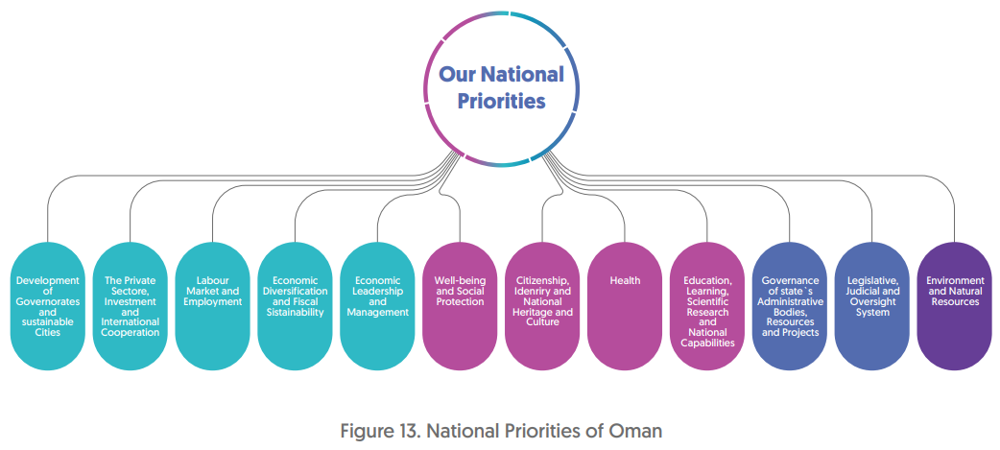
Figure 13. National Priorities of Oman
Oman Vision 2040 pursues clear guidelines and a greater implementation of the relevant national plans to ensure the effective incorporation of the SDGs into its decision-making process. Additionally, a coordinating body, the Oman Vision 2040 Implementation Monitoring Unit, was established alongside other governmental bodies to monitor development of the 69 Key Performance Indicators outlined in the Vision 2040.
Oman conducts regular progress reports9 to assess its achievements and challenges in pursuing the SDGs. By aligning its national priorities with these global goals, Oman is actively contributing to the collective efforts needed to address the climate crisis and promote sustainable development for the benefit of its citizens and the world.
To realize Oman Vision 2040’s core priorities, several National Programs were prepared under the follow-up Unit and in close collaboration with relevant stakeholders. These programs are set in motion following Royal Directives or subsequent endorsement by the Council of Ministers. Each program operates under the purview of a designated minister, supported by a dedicated executive body, an independent budget allocation, and specialized teams committed to formulating initiatives and projects. These teams work in tandem with the unit, actively contributing to program objectives and collaborating on overcoming associated challenges. Additionally, rigorous oversight encompasses the performance metrics linked to the individual initiatives and projects nested within each program.
The National Program for Fiscal Sustainability and Financial Sector Development “Estidamah”
The National Employment Program “Tashgheel”
The National Program for Investment and Exports Development “Nazdaher”
The National Program for Economic Diversification “Tanwea’a”
Government Digital Transformation Program
The National Program for Carbon Neutrality
The Paris Global Goal and Vision 2040 both include the Net Zero Strategy 2050, which acts as Oman's road map for a resilient, sustainable, and prosperous future. It complies with SDGs 13 (Climate Action) and 15 (Life on Land) by placing sustainable environmental practices at the core of its operations. The nation is committed to attaining net zero emissions by 2050, and placing a focus on switching to renewable energy, reducing its reliance on fossil fuels, and protecting its biodiversity and natural ecosystems.
In April 2019, Oman approved a comprehensive 20-year National Strategy for Adaptation and Mitigation to Climate Change, underscoring its commitment to addressing the challenges posed by climate change. This strategy is organized around three integrated themes, informed by five primary objectives, that collectively reflect Oman's priorities in responding to climate change.
The first theme, Climate Science, entails an in-depth analysis of historical climate trends and projections of future climate changes. It includes the development of climate information, regional climate modeling, air monitoring, and strategic research actions.
The second theme, Vulnerability and Adaptation, forms the basis for Oman's Climate Change Adaptation Strategy by examining the vulnerabilities of priority sectors in Oman to climate change impacts.
The third theme which is the core of this strategy, Sustainable Development, which seeks to harmonize climate adaptation and mitigation efforts with broader development goals, emphasizing the importance of building climate resilience while promoting sustainable development.
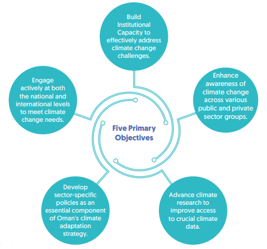
Figure 14. The five primary objectives of the National Strategy for Adaptation and Mitigation to Climate Change (2040-2020)
The Climate Change Adaptation Strategy is being developed with the GCF Readiness Program support to address the impacts of climate change in Oman. The strategy will guide climate actions in five critical sectors: water resources, marine biodiversity and fisheries, agriculture, urban areas, tourism and infrastructure, and public health. Oman recognizes the need for sector-specific adaptation strategies, which will be integrated into sectoral processes and incorporated into the portfolios of relevant ministries.
In its ongoing commitment to incorporate climate change requirements into its legal framework, the Omani Environmental Authority, in collaboration with relevant stakeholders, is currently revising Oman’s Environmental Law. This update aims to clarify emission reporting rules for various sectors, as well as establish the institutional framework for committees that are responsible for monitoring and resolving climate-related matters. Additionally, the draft intends to offer guidance on local and international carbon market participation and criteria for registering carbon emission reductions for private use. This aligns with Oman’s NDC and other strategic documents to ensure the fulfillment of Oman’s national commitments.
In addition, a Steering Committee for Climate Change has been recently formed to supervise the technical teams under its purview, including teams focusing on mitigation, adaptation, finance, technology, and capacity building as a segment of the broader Ministerial Committee on Climate Change.
The carbon management lab workshop was conducted for all Ministries and Departments for the long-term ambition of transitioning to a carbon net-zero status by 2050. The lab established a roadmap for all sectors, and as a result, a number of projects and initiatives were approved, including mitigation projects that would significantly reduce greenhouse gas emissions. By establishing the baseline and creating a national strategy and execution plan for each sector’s transition to carbon net zero, the Carbon Management Lab consolidated all of Oman’s national efforts.
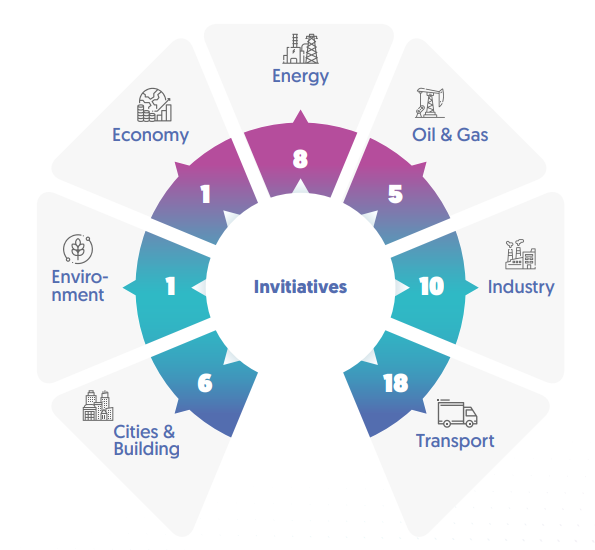
Figure 15. Net Zero Initiatives
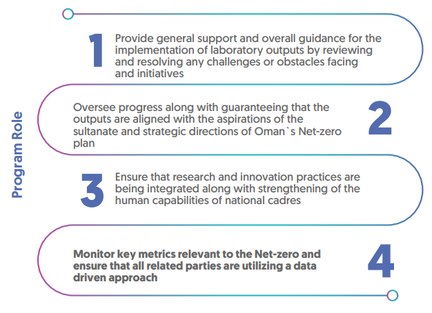
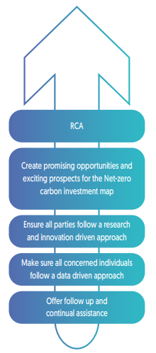
Figure 16. Net Zero Initiatives
The national program was launched in January 2023 by the Oman Vision 2040 in collaboration with the Ministry of Energy and Minerals and the Environment Authority in order to hasten the attainment of the desired status and strategic direction of the Sultanate of Oman's pathway to net-zero emissions as it was announced that these pathways and budget were necessary to achieve net-zero emissions by the year 2050. The national program monitors a total of 49 Initiatives and projects including 32 enabling projects and 17 projects that contribute directly to lower emissions. The organizational structure and role of the program are described in Figure 17 below:
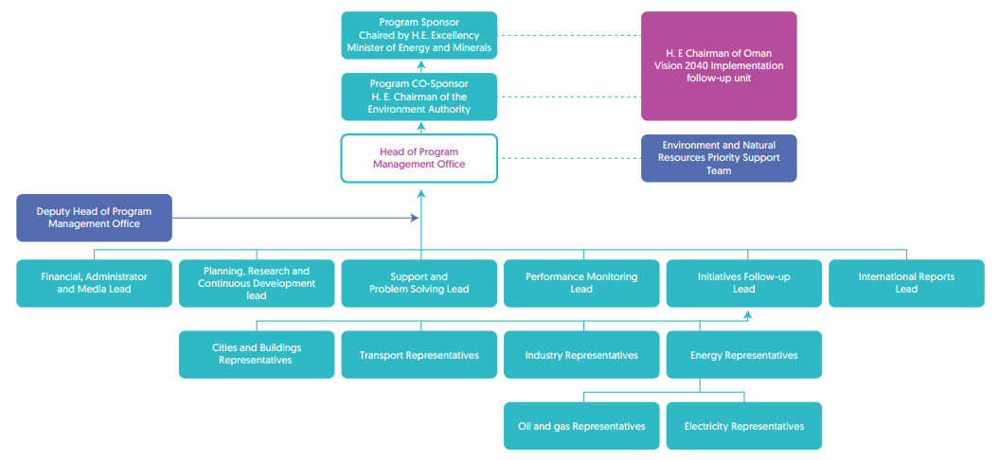
Figure 17. National Program for Carbon Neutrality (PMO)
Head of Program Management Office
The Sultanate of Oman recognizes the gravity and multifaceted nature of the global climate crisis. In response, Oman has adopted a comprehensive approach that integrates the SDGs into its climate action strategy, positioning the country on a resilient development trajectory. Acknowledging the urgency of climate adaptation and resilience-building, Oman underscores the necessity of unified efforts and a shared vision among nations to create a world capable of thriving, despite climate challenges.
The 2030 Agenda for Sustainable Development has been seamlessly integrated into Oman's Five-Year Plans and the Oman Vision 2040. Remarkably, Oman has achieved substantial progress towards the 2030 SDGs, ranking among the six Arab countries that have accomplished at least 60% of these goals by 2022, with an average score of 68.5910 out of 100.
Oman's holistic approach, aligned with the SDGs, signifies its dedication to addressing the climate crisis and fostering sustainable development. The nation's exemplary progress towards these goals demonstrates its commitment to creating a resilient and thriving future.
Oman's commitment to mitigating emissions and adapting to climate change takes center stage through its concerted efforts to cultivate human resources and capabilities. Embodied within Oman's Net Zero Strategy 2050, a visionary blueprint is emerging, one that envisions a populace - including women, children, and youth - empowered to address climate challenges head-on. This strategy visualizes a substantial surge in employment opportunities, aiming to generate over 40% new roles in the power sector and an impressive 55% expansion in the Hydrogen sector by 2050.
It's important for Oman to establish partnerships, both domestically and globally, to gain access to knowledge, resources, and best practices. International collaboration holds the potential to enhance Oman's ability to effectively tackle climate change challenges holistically. Additionally, regular reviews and revisions of the Climate Change Strategy are essential to ensure its alignment with evolving scientific insights and changing circumstances. This flexibility is vital to remain on course in achieving climate-related objectives and responding rapidly to emerging issues in the realm of climate change. Furthermore, the elimination of regulatory obstacles will streamline the swift and efficient implementation of climate action plans across various sectors. Central to this pursuit is the strategic development of skills and capabilities, that maximizes the potential of these opportunities while facilitating a seamless transition to a sustainable economy. This approach is marked by a keen focus on aligning skill sets with emerging technologies like CCUS, hydrogen technologies, and Electric Vehicles (EVs).
This strategic endeavor unfolds in tandem with an overarching collaborative spirit, engaging stakeholders across sectors to drive climate action. Core to this collaboration is capacity building, equipping stakeholders with the knowledge and tools to adeptly navigate climate initiatives' complex terrain. Simultaneously, a focal point is placed on raising awareness about climate change and its cascading implications. Nurturing a shared sense of accountability towards climate challenges and highlighting the promising avenues of the green economy. In the convergence of these efforts, Oman stands poised, not only to realize its Net Zero ambitions, but to usher in a future where its citizens are empowered agents of sustainable progress.
Oman's NDC report underscores the strategic imperative to harness cutting-edge solutions across multiple sectors, ranging from energy and resource efficiency to electrification, renewables, and advanced technologies. By embracing these innovations, Oman aims to catalyze positive change, create economic opportunities, and accelerate the transition towards a low-carbon and resilient future.
Oman is prioritizing research and development initiatives to ensure the efficient production of both green and blue hydrogen. Green Hydrogen, harnessed from renewable energy sources, and Blue Hydrogen, extracted from natural gas with the implementation of Carbon Capture and Storage (CCS) technologies, will feature prominently in Oman’s strategies to curtail emissions across various sectors. Not to mention that established requisite infrastructure for hydrogen storage, transportation, and distribution, facilitate its widespread adoption.
In alignment with Oman’s dedication to the Global Methane Pledge, the pivotal role of accurate methane monitoring and emissions tracking is being underscored. Oman is poised to collaborate closely with international organizations and fellow nations to access and exchange satellite data that specifically pertains to methane emissions. This collaboration will significantly enhance Oman’s ability to promptly detect and respond to methane emissions; therefore, aligning with Oman’s methane reduction objectives and supporting global climate action.
The Sultanate of Oman, in its drive for progress and innovation and pursuit of SDGs, has initiated numerous programs to bolster investment in education, scientific research, and multidisciplinary innovation which will naturally bolster environmental knowledge. Through partnerships with the private sector, Oman has set up 42 public schools, encouraged private participation in R&D, and has taken significant digital strides with the Oman Innovate Platform. Essential institutions, including the Industrial Innovation Academy, Liwa Science and Innovation Centre, and Oman Aviation Academy, highlight the nation's commitment to pioneering advancements. In healthcare, the Sultan Qaboos Comprehensive Cancer Care and Research Centre (SQCCCRC) showcases Oman's dedication to premier medical research and care. To fortify the future, Oman has launched the National Youth Plan, National Fund for Emergencies, and the National Subsidy System (NSS), reinforcing financial sustainability. In energy efficiency, Oman targets the integration of smart meters for 50,000 industrial users to foster efficient energy practices. Furthermore, the Oman Investment Authority champions human capital through programs like "Nomu", "Eidaad", and "Takatuf Scholars." Economic diversification is prioritized via the National Program for Investment and Exports Development (Nazdaher), covering various sectors. Environmentally, Oman demonstrates commitment through initiatives like the Oman Hydrogen Centre, the planting of 10 million trees, and the deployment of artificial rain seeding stations. These diverse and impactful initiatives collectively underline Oman's dedication to progress, innovation, sustainability, and the well-being of its citizens and environment.
Oman recognizes the need for accelerated climate financing to implement its identified mitigation actions and adapt to climatic impacts. It is expected that the financing for Oman’s ambitious energy transition will primarily come from climate finance, carbon markets, and private sector investments, contributing 70-80% of the required funds. Simultaneously, the government is committed to playing a significant role in supporting this transition, contributing 20-30% of the necessary financing. This collaborative effort between the public and private sectors highlights the shared commitment to sustainable energy practices, environmental stewardship, and the decarbonization of Oman’s energy landscape.
Establishing the necessary frameworks, within both the public and private sectors, are key drivers for ushering a low carbon economic footprint and reinforcing the economy's resilience in the face of regional and global changes. A competitive economy, spearheaded by the private sector, will capitalize on various advantages the Sultanate possesses. Notably, its political and economic stability, and its long-term investments in strategic relationships. The low-carbon business landscape will be cultivated, with the private sector assuming a leading role and being empowered to foster equitable economic growth. This empowerment aims to create a competitive and enabling environment for the private sector, promoting the development of free, socially responsible, and environmentally sustainable industries.
There will be a focus on enhancing financial depth in the capital market and ensuring sustainable funding through innovative models to kickstart productive enterprises, particularly small and medium-sized enterprises (SMEs). Oman's strategically advantageous geographic location offers a prime opportunity to facilitate investment collaborations between Omani private enterprises and the international business community, attracting high-quality foreign direct investments in green technologies and aiding Oman in becoming a net zero by 2050. These global partnerships will broaden economic diversification and boost Oman's GDP through increased export contributions.
In the journey towards achieving Oman's net-zero strategy, the significance of a well-defined climate finance strategy cannot be overstated. As all nations unite to combat the escalating challenges posed by climate change, the role of climate finance in facilitating sustainable development has emerged as a cornerstone.
According to the Net Zero 2050 strategy, the magnitude of investments needed to catalyze the hydrogen export economy alone adds an estimated USD 230 billion to the already substantial funding requirement. This increase in capital expenditure, constituting a significant 60-65% rise above the business-as-usual scenario, underscores the scale of financial commitment demanded by Oman's transition to a sustainable future. Notably, these supplementary investments cannot be solely borne by the Government; an urgent call for diverse sources of funding emerges.
In this context, the projection that the private sector could potentially shoulder 70-80% of the global energy transition expenses by 2050 takes on heightened significance. To transform this projection into reality, an adept climate finance strategy assumes a pivotal role in attracting external investments, offering a fertile ground for partnerships between public and private stakeholders. By facilitating access to capital and mitigating financial risks, this strategy becomes the linchpin in steering Oman towards its net-zero objectives, while simultaneously fostering an environment ripe for collaboration and sustainable growth.
Table 10. Climate Finance mechanisms
|
Carbon Market |
Article 6 Oman fully supports and intends to actively participate in the implementation of Article 6 of the Paris Agreement. Moreover, Oman will work collaboratively with international partners to establish robust rules and guidelines for the transparent and accountable operation of these mechanisms. Blue Carbon Strategy Recognizing the significance of coastal ecosystems in isolating carbon and safeguarding against climate impacts. The country aims to protect and restore mangroves, seagrasses, and other coastal habitats that act as valuable carbon sinks. By doing so, Oman contributes to mitigating climate change while enhancing coastal resilience and supporting biodiversity. This strategy can be financed through the participation of the private sector as well as emission removal monetization. |
|
Green Climate Fund |
Oman's engagement with the GCF began in 2016 through the Readiness and Preparatory Support (RSP) program, which significantly enhanced the Ministry of Environment and Climate Affairs (MECA). Including the accreditation of a direct access entity, the establishment of Oman's Country Programme, dissemination of GCF-related information to key stakeholders, and improved understanding of the benefits and engagement possibilities with the GCF, particularly in the private sector. So far three GCF readiness programs implemented: (1)Low-Carbon Transportation Development in the Sultanate of Oman. (2)Building a Resilient Environment and Sustainable Agriculture and Water. (3)Enhancing the NAP Process for the Sultanate of Oman (Ongoing). |
|
Loss and Damage |
Tropical cyclones present substantial difficulties and hazards for Oman, as it has encountered more than nine powerful cyclones within the last half-century. A prominent illustration of this is the tropical cyclone Shaheen, that hit Oman in 2021, inflicting extensive harm to infrastructure, leading to loss of life, and resulting in considerable economic setbacks exceeding several billion US dollars in uninsured sectors. The economic toll of this cyclone surpassed the impact of Cyclone Gonu 2007, which amounted to 4.2 billion dollars. Furthermore, Cyclone Shaheen 2021 caused economic damage of more than 3 billion and required more funds for the recovery activities. For that reason, the Sultanate of Oman is planning to initiate a national loss and damage policy and response fund to integrate into the country's broader climate adaptation and resilience strategies. This will help seek international cooperation and financial support in dealing with the complex and multifaceted challenges. This exercise would be supplemented with the vulnerability assessment studies carried as part of the NAP. |
|
Multilateral Development Banks |
Oman is exploring opportunities in the realm of green finance, including the issuance of green bonds through its proposed multilateral banks. Green bonds are a vital instrument for funding environmentally sustainable projects and initiatives, aligning with Oman's commitment to environmental stewardship and sustainability. These green bonds will enable the country to raise capital specifically for eco-friendly projects, such as renewable energy, clean transportation, and environmentally responsible infrastructure. By incorporating green finance into its multilateral bank development strategy, Oman aims to make a positive impact on its environment ,while simultaneously attracting investments in sustainable development. |
Oman is actively promoting socio-economic empowerment programs with the goal of enhancing adaptive capacity and ensuring a decent and sustainable life for all segments of society. These programs primarily target the needs of low-income groups, women, children, and youth. The key objectives are to deliver social justice, create new job opportunities, foster skill development, and support the transition to a green economy.
In this context, the Juthoor Program and Ocean Generation Initiative, launched in the first quarter of 2023, are educational initiatives designed to engage youth and local communities. Their primary goal is to cultivate awareness of environmental sustainability and instill attitudes and values supportive of this cause. The initiatives yield tangible outcomes, including the establishment of a quantitative indicator for gauging environmental behavior, the development of interactive educational materials for schools and universities, and the implementation of public programs and activities.
Furthermore, in collaboration with Veolia Oman, the Ministry of Education has instituted Namat Competition, an annual sustainability innovation competition in schools. This competition specifically emphasizes innovation in water management, waste management, and energy management.
These efforts align with SDG 4 (Quality Education) and SDG 3 (Good Health and Well-being). Additionally, Oman is investing in education and healthcare to provide its citizens with access to quality education, healthcare services, and opportunities for personal development.
The National Monitoring, Reporting, and Verification (MRV) system to be established in Oman will play a crucial role in tracking various aspects related to climate action. It will monitor GHG emissions across all sectors of the economy, encompassing energy, transport, industry, agriculture, and waste. Furthermore, the system will also track the progress of mitigation actions, such as the installation of renewable energy projects and advancements in energy efficiency.
In addition to emissions and mitigation actions, the MRV system shall oversee the implementation of adaptation measures, including the construction of seawalls and the development of drought-resistant crops. It will also track financial flows associated with climate change, including investments in both mitigation and adaptation initiatives.
Lastly, the MRV system shall keep a record of capacity building activities aimed at supporting the implementation of Oman's NDC, ensuring that the nation's climate goals are effectively realized.
The specific activities to be included in the scope of the MRV system will depend on Oman’s specific circumstance. However, some examples of activities that could be included are: collecting data on GHG emissions, mitigation actions, adaptation measures, financial flows, capacity building activities, verifying the accuracy and reliability of the data that is collected, reporting on the progress of Oman's NDC implementation to the UNFCCC, and ensuring that all stakeholders are accountable for their actions related to climate change.
The MRV system is being developed by the Environmental Authority of Oman (EA) in collaboration with other government agencies and stakeholders. It will be based on international standards and guidelines such as the UNFCCC’s MRV Protocol. The development of the MRV system is a critical step for Oman to meet its climate change targets. By tracking its emissions and progress, Oman will be able to make informed decisions on climate change policies and measures.
The NDC for the Sultanate of Oman is fully aligned with Article 6, Paris Global Goal, Economic Diversification and Mitigation efforts regarding Oman's policies on Net Zero Strategy 2050 and Vision 2040. This is an updated strategic guidance for the Oman climate agenda. This update provides a comprehensive outlook through 2030 and beyond. This document will be supplemented with the Adaptation Plan which is under preparation, including future assessment and evaluations on loss and damage in addition to Article 6 framework.
|
Sector |
BAU Scenario for GHG Emissions in 2030 (MtCO2e) |
Mitigation Target by 2030 (Percentage from BAU) |
|
Power |
21.37 |
42% |
|
Oil & Gas |
25.33 |
17% |
|
Industry |
34.44 |
7% |
|
Transport |
18.62 |
19% |
|
Other |
6.96 |
45% |
Information Necessary for Clarity, Transparency, and Understanding of The First Update of the Second NDC
|
1. |
Quantifiable information on the reference point (including, as appropriate, a base year) |
||||||||||||||||||||||||||||||||||||||||||
|
a. |
Reference year(s), base year(s), reference period(s) or other starting point(s); |
Base year: 2021 Reference period: 2021-2030 Business-as-Usual projection year: 2030 |
|||||||||||||||||||||||||||||||||||||||||
|
b. |
Quantifiable information on the reference indicators, their values in the reference year(s), base year(s), reference period(s) or other starting point(s), and, as applicable, in the target year; |
The Sultanate of Oman’s GHG emissions in 2021 (base year) were 90 MtCO2e. Section 3.5 provides data on sectoral GHG emissions, presenting both base year and future projections for the year 2030. |
|||||||||||||||||||||||||||||||||||||||||
|
c. |
For strategies, plans and actions referred to in Article 4, paragraph 6, of the Paris Agreement, or policies and measures as components of NDCs where paragraph 1(b) above is not applicable, Parties to provide other relevant information; |
Not applicable |
|||||||||||||||||||||||||||||||||||||||||
|
d. |
Target relative to the reference indicator, expressed numerically, for example in percentage or amount of reduction; |
Reduction of 21% (7% committed and 14% conditional) by 2030 (equivalent to 22.46 MtCO2e) relative to BAU, with total GHG emissions, capped at 84.25 Mt CO2e in 2030. By 2030, the Sultanate of Oman aims to achieve significant reductions in GHG emissions for the below four key sectors compared to their Business-As-Usual (BAU) emission levels. Other sectors collectively contribute to less than 5% of emissions and include Agriculture, LULUCF, Waste, and Hydrogen. |
|||||||||||||||||||||||||||||||||||||||||
|
e. |
Information on sources of data used in quantifying the reference point(s); |
During the Carbon Management Lab, the reference points were created by triangulating reported data on emissions, activity levels, and the energy consumption.
|
|||||||||||||||||||||||||||||||||||||||||
|
f. |
Information on the circumstances under which the Party may update the values of the reference indicators. |
Oman has issued a tender to develop a GHG dashboard inventory and in the process to develop its independent MRV (Measurement, Reporting, and Verification) system to effectively monitor its emissions and gauge its progress. The forthcoming Biennial Transparency Report (BTR) will serve as a valuable resource for accessing up-to-date information on this endeavor. |
|||||||||||||||||||||||||||||||||||||||||
|
2. |
Time frames and/or periods for implementation |
||||||||||||||||||||||||||||||||||||||||||
|
a. |
Time frame and/or period for implementation, including start and end date, consistent with any further relevant decision adopted by the CMA; |
From 2021 to the end of 2030. |
|||||||||||||||||||||||||||||||||||||||||
|
b. |
Whether it is a single-year or multi-year target, as applicable. |
Single-year target |
|||||||||||||||||||||||||||||||||||||||||
|
3. |
Scope and coverage |
||||||||||||||||||||||||||||||||||||||||||
|
a. |
General description of the target; |
The emission reduction target seeks to achieve a 21% reduction relative to the Business-As-Usual (BAU) projection for the year 2030. |
|||||||||||||||||||||||||||||||||||||||||
|
b. |
Sectors, gases, categories and pools covered by the nationally determined contribution, including, as applicable, consistent with IPCC guidelines; |
Sector: Sectors with specific quantitative targets encompass:
Greenhouse gases covered: Oman's commitment to addressing GHG emissions covers all major gases including Carbon Dioxide (CO2), Methane (CH4), and Nitrous Oxide (N2O). |
|||||||||||||||||||||||||||||||||||||||||
|
c. |
How the Party has taken into consideration paragraphs 31(c) and (d) of decision 1/CP.21; |
Fluorinated Gases (F-gases) are included for the industrial sector only as it is still under research in the other sectors. However, Oman plans to include F-gases for all sectors in future commitments, aligning with international agreements. The country is updating its regulations to meet global best practices in managing F-gas emissions. The maritime and aviation sector are not considered here, since these sectors are outside of the remit of the Paris agreement |
|||||||||||||||||||||||||||||||||||||||||
|
d. |
Mitigation co-benefits resulting from Parties’ adaptation actions and/or economic diversification plans, including description of specific projects, measures and initiatives of Parties’ adaptation actions and/or economic diversification plans. |
Refer to Section 2.3 “Adaptation measures” for mitigation co-benefits actions and refer to Section 3.6 for economic diversification plans. |
|||||||||||||||||||||||||||||||||||||||||
|
4. |
Planning process Information on the planning processes that the Party undertook to prepare its NDC and, if available, on the Party’s implementation plans; |
||||||||||||||||||||||||||||||||||||||||||
|
a(i) |
Domestic institutional arrangements, public participation and engagement with local communities and indigenous peoples, in a gender-responsive manner; |
Refer to Section 1.5 ‘Stakeholder Engagement’ and Section 4.2 ‘Institutional Arrangements’ for planning processes. |
|||||||||||||||||||||||||||||||||||||||||
|
a(ii) |
Contextual matters, including, inter alia, as appropriate: |
||||||||||||||||||||||||||||||||||||||||||
|
(i) |
National circumstances, such as geography, climate, economy, sustainable development and poverty eradication; |
Refer to Section 1 ‘National Context’ above |
|||||||||||||||||||||||||||||||||||||||||
|
a(i) |
Best practices and experience related to the preparation of the nationally determined contribution; |
Refer to Section 1 ‘National Context’ above |
|||||||||||||||||||||||||||||||||||||||||
|
On October 11, 2022, a Royal Directive was issued to support Oman’s objective of becoming carbon neutral by 2050 as part of its Vision 2040 plan. The Oman Sustainability Centre was established to supervise and enforce zero-carbon emission initiatives to achieve this goal. The Centre will drive the country towards a more sustainable future. |
|||||||||||||||||||||||||||||||||||||||||||
|
(iii) |
Other contextual aspirations and priorities acknowledged when joining the Paris Agreement; |
Refer to Section 1 ‘National Context’ above |
|||||||||||||||||||||||||||||||||||||||||
|
b. |
Specific information applicable to Parties, including regional economic integration organizations and their member States, that have reached an agreement to act jointly under Article 4, paragraph 2, of the Paris Agreement, including the Parties that agreed to act jointly and the terms of the agreement, in accordance with Article 4, paragraphs 16, 18, of the Paris Agreement; |
Not applicable |
|||||||||||||||||||||||||||||||||||||||||
|
c. |
How the Party’s preparation of its nationally determined contribution has been informed by the outcomes of the global stocktake, in accordance with Article 4, paragraph 9, of the Paris Agreement; |
The Sultanate of Oman is committed to the outcome of first Global Stocktake. The First Update of the Second NDC was informed by the following IPCC reports:
|
|||||||||||||||||||||||||||||||||||||||||
|
d. |
Each Party with a nationally determined contribution under Article 4 of the Paris Agreement that consists of adaptation action and/or economic diversification plans resulting in mitigation co-benefits consistent with Article 4, paragraph 7, of the Paris Agreement to submit information on: |
||||||||||||||||||||||||||||||||||||||||||
|
d(i) |
How the economic and social consequences of response measures have been considered in developing the NDC. |
Oman's NDC, informed by the "Net Zero 2050" document, underscores its commitment to address the economic and social repercussions of response measures. Comprehensive impact assessments have been conducted to assess the consequences of proposed climate actions on various economic sectors and communities for Orderly Transition. The goal is to implement mitigation measures that not only curb GHG emissions but also stimulate sustainable economic growth, job creation, and social equity. By integrating the principles of the "Net Zero 2050" document into its NDC, Oman aims to ensure a balanced transition toward a low-carbon, climate-resilient future that aligns with both climate goals and national development priorities. Please refer to the 3.6.1 on the information related to Economic Diversification. |
|||||||||||||||||||||||||||||||||||||||||
|
d(ii) |
Specific projects, measures and activities to be implemented to contribute to mitigation co-benefits, including information on adaptation plans that also yield mitigation co-benefits, which may cover, but are not limited to, key sectors, such as energy, resources, water resources, coastal resources, human settlements and urban planning, agriculture and forestry; and economic diversification actions, which may cover, but are not limited to, sectors such as manufacturing and industry, energy and mining, transport and communication, construction, tourism, real estate, agriculture, and fisheries. |
Refer to Section 2.3 “Adaptation measures” for further details. |
|||||||||||||||||||||||||||||||||||||||||
|
5. |
Assumptions and methodological approaches, including those for estimating and accounting for anthropogenic GHG emissions and, as appropriate, removals: |
||||||||||||||||||||||||||||||||||||||||||
|
a. |
Assumptions and methodological approaches used for accounting for anthropogenic GHG emissions and removals corresponding to the Party’s NDC, consistent with decision 1/CP.21, paragraph 31, and accounting guidance adopted by the CMA; |
The different pathways for Sultanate of Oman were shaped in the Decarbonization Scenario Explorer (DSE), This methodology enables the modeling of scenarios based on underlying activity levels, such as transportation usage or cement production, which influence the country's emissions over the projected time horizon. The methodology contains more than 200 technologies and shift levers across all sectors of the economy that allowed Oman to build tailored abatement scenarios. Thanks to the bottom-up modeling of energy consumption, capital expenditures, operating expenditures, and emission factors, the methodology granularly quantifies the greenhouse-gas abatement, investments, savings, and energy system implications of each scenario. The Sultanate of Oman has employed the IPCC methodology and guidelines of 2006 for the inventory of their GHG emissions and removals, which was reported as 96 Mt CO2 equivalent for 2015 in their Biennial Update Report. Additionally, Oman used the same methodology and guidelines for projecting GHG emissions up to 2030 under the Business-As-Usual scenario, which is projected at 106 Mt CO2e. |
|||||||||||||||||||||||||||||||||||||||||
|
b. |
Assumptions and methodological approaches used for accounting for the implementation of policies and measures or strategies in the NDC; |
The Sultanate of Oman will report on the implementation progress of the first updated of the second NDC in its Biennial Transparency Report using appropriate methods and assumptions. |
|||||||||||||||||||||||||||||||||||||||||
|
c. |
If applicable, information on how the Party will take into account existing methods and guidance under the Convention to account for anthropogenic emissions and removals, in accordance with Article 4, paragraph 14, of the PA, as appropriate; |
Please refer 5(a) above |
|||||||||||||||||||||||||||||||||||||||||
|
d. |
IPCC methodologies and metrics used for estimating anthropogenic GHG emissions and removals; |
Please refer 5(a) above |
|||||||||||||||||||||||||||||||||||||||||
|
e. |
Sector-, category- or activity-specific assumptions, methodologies and approaches consistent with IPCC guidance, as appropriate, including, as applicable: |
||||||||||||||||||||||||||||||||||||||||||
|
e(i) |
Approach to addressing emissions and subsequent removals from natural disturbances on managed lands; |
The Sultanate intends to develop a strategy focused on blue carbon to effectively manage and restore mangrove conservation. |
|||||||||||||||||||||||||||||||||||||||||
|
e(ii) |
Approach used to account for emissions and removals from harvested wood products; |
Not Applicable |
|||||||||||||||||||||||||||||||||||||||||
|
e(iii) |
Approach used to address the effects of age-class structure in forests; |
Not Applicable |
|||||||||||||||||||||||||||||||||||||||||
|
f. |
Other assumptions and methodological approaches used for understanding the NDC and, if applicable, estimating corresponding emissions and removals, including: |
||||||||||||||||||||||||||||||||||||||||||
|
f(i) |
How the reference indicators, baseline(s) and/or reference level(s), including, where applicable, sector-, category- or activity specific reference levels, are constructed, including, for example, key parameters, assumptions, definitions, methodologies, data sources and models used; |
Please refer to sections 1(e) and 5(a) above |
|||||||||||||||||||||||||||||||||||||||||
|
f(ii) |
For Parties with NDCs that contain non-GHG components, information on assumptions and methodological approaches used in relation to those components, as applicable; |
Not applicable |
|||||||||||||||||||||||||||||||||||||||||
|
f(iii) |
For climate forcers included in NDCs not covered by IPCC guidelines, information on how the climate forcers are estimated; |
Not applicable |
|||||||||||||||||||||||||||||||||||||||||
|
f(iv) |
Further technical information, as necessary; |
Not applicable |
|||||||||||||||||||||||||||||||||||||||||
|
g. |
The intention to use voluntary cooperation under Article 6 of the Paris Agreement, if applicable. |
Please refer to the Section 4.6.2 “Climate Finance” |
|||||||||||||||||||||||||||||||||||||||||
|
6. |
How the Party considers that its NDC is fair and ambitious in the light of its national circumstances: |
||||||||||||||||||||||||||||||||||||||||||
|
a. |
How the Party considers that its NDC is fair and ambitious in the light of its national circumstances; |
As a non-annex I country, Oman aims to become carbon neutral by 2050 and considers its updated NDC target to align with Article 2 of the Convention. The updated third NDC is a comprehensive, ambitious goal backed by the latest scientific and evidence-based research. Please refer to Section 1.4 above under “More Ambitious Emission Reduction Target” |
|||||||||||||||||||||||||||||||||||||||||
|
b. |
Fairness considerations, including reflecting on equity; |
Refer 6(a) above |
|||||||||||||||||||||||||||||||||||||||||
|
c. |
How the Party has addressed Article 4, paragraph 3, of the Paris Agreement; |
This NDC of Oman is in line with Article 4, paragraph 6, of the Paris Agreement. Refer to Section 3.5 ‘Mitigation Targets and Pathways per sector’. |
|||||||||||||||||||||||||||||||||||||||||
|
d. |
How the Party has addressed Article 4, paragraph 4, of the Paris Agreement; |
Not applicable |
|||||||||||||||||||||||||||||||||||||||||
|
e. |
How the Party has addressed Article 4, paragraph 6, of the Paris Agreement. |
Not applicable |
|||||||||||||||||||||||||||||||||||||||||
|
7. |
How the NDC contributes towards achieving the objective of the Convention as set out in its Article 2: |
||||||||||||||||||||||||||||||||||||||||||
|
a. |
How the NDC contributes towards achieving the objective of the Convention as set out in its Article 2; |
Oman’s 1st Update of the 2nd NDC contribute to the objective of the Convention as set out in Article 2 Refer to Section 3.5 ‘Mitigation Targets and Pathways per sector’. |
|||||||||||||||||||||||||||||||||||||||||
|
b. |
How the NDC contributes towards Article 2, paragraph 1(a), and Article 4, paragraph 1, of the PA |
Oman's NDC not only conforms to the goals set out in Article 2.1(a) of the Paris Agreement, aiming to constrain the global average temperature increase to well below 2°C above pre-industrial levels and pursuing efforts to limit it to 1.5°C, but also underscores Oman's commitment to achieving net-zero emissions by 2050. |
|||||||||||||||||||||||||||||||||||||||||